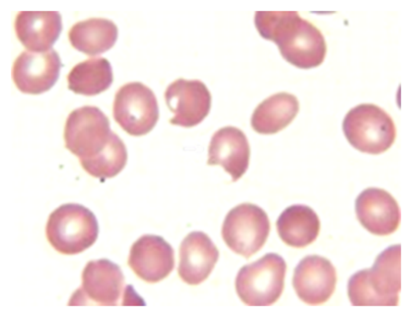
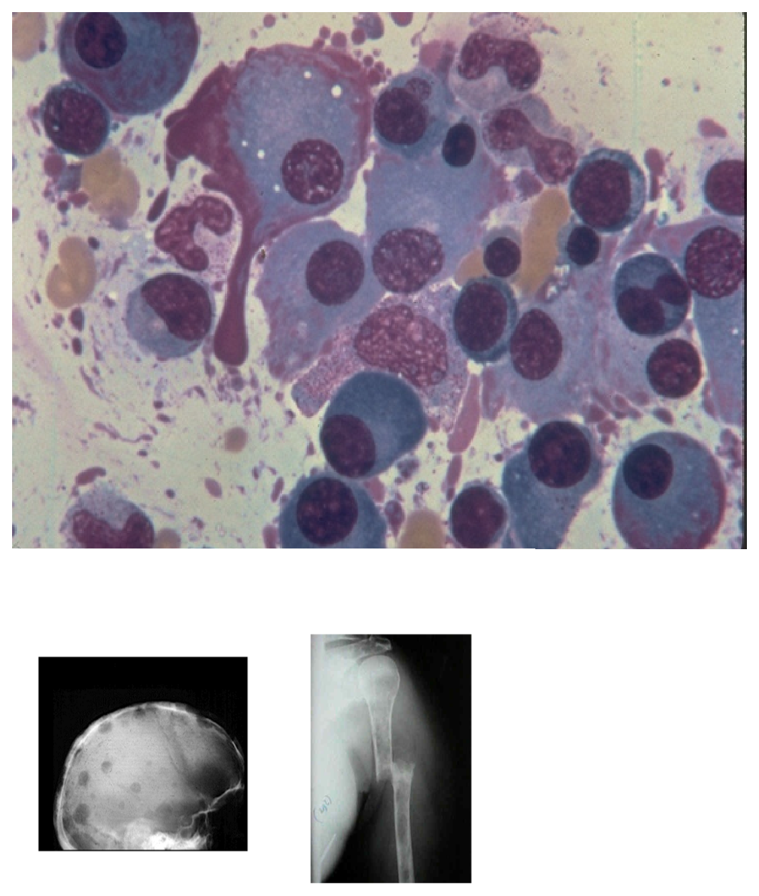
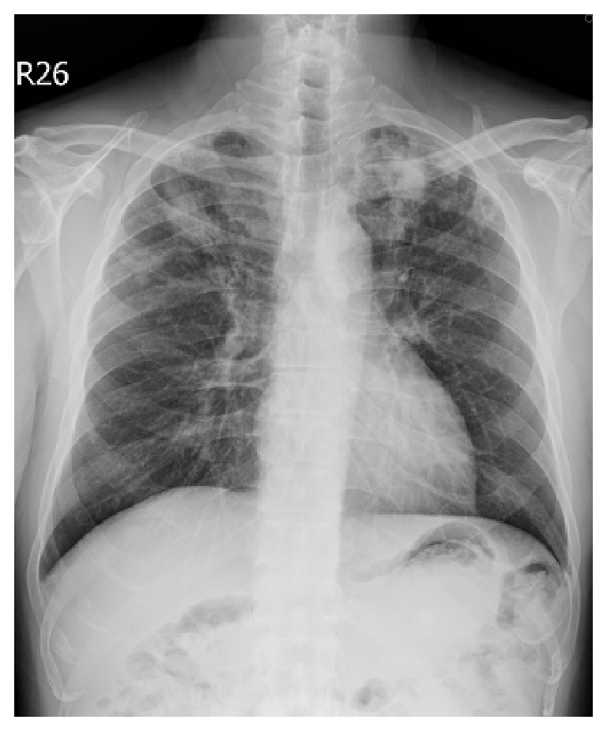
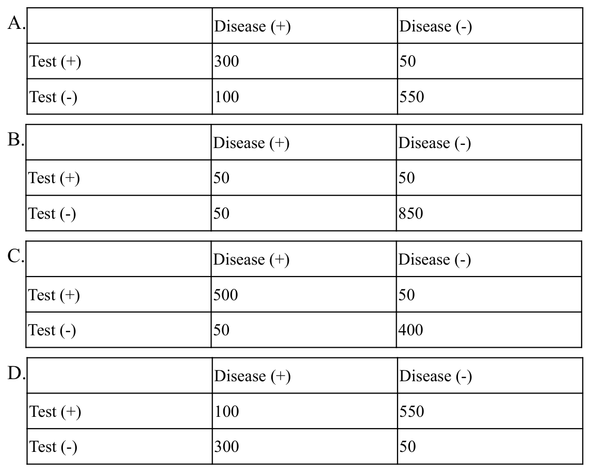

開卷有益 ／
醫師 ／ 醫學（三）（包括內科、家庭醫學科等科目及其相關臨床實例與醫學倫理） ／ 112 年第 1 次112 年第 1 次醫師醫學（三）（包括內科、家庭醫學科等科目及其相關臨床實例與醫學倫理）試題與答案
這一頁是民國 112 年第 1 次醫師醫學（三）（包括內科、家庭醫學科等科目及其相關臨床實例與醫學倫理）的整份歷屆試題，共 80 題，題目與標準答案出自考選部「國家考試試題及測驗式試題答案」開放資料，其中 80 題附有詳解。以下逐題列出題幹、選項與答案；要計時作答或記錄成績，請用線上練習。
考選部原始場次代碼：112020
線上作答這一科 →
全部 80 題
第 1 題
19歲女性病患，自述過去身體健康，並無酗酒或病毒性肝炎病史。因為近一個月來下肢浮腫和血液檢查發現肝功能異常就醫。在外院腹部超音波顯示肝硬化。血液檢查發現albumin：3.2 g/dL；AST（GOT）：51 U/L；ALT（GPT）：43 U/L；總膽紅素：1.11 mg/dL；鹼性磷酸酶（alkaline phosphatase）：274 U/L；ceruloplasmin為11.1 mg/dL（正常參考值，20～60 mg/dL）。病患最有可能的診斷為何？
（A） hemochromatosis（B） amyloidosis（C） primary biliary cirrhosis（D） Wilson's disease答案：（D）
詳解與考點 正解：19 歲女性已有肝硬化且 ceruloplasmin 11.1 mg/dL，低於參考值 20–60 mg/dL；年輕病人合併低 ceruloplasmin 最應想到銅代謝異常的 Wilson's disease，故選 D。其肝臟表現可從肝炎、肝硬化到肝衰竭。
A：hemochromatosis 是鐵質堆積疾病，診斷線索通常是鐵蛋白、轉鐵蛋白飽和度升高，不能以低 ceruloplasmin 解釋。
B：amyloidosis 可造成多器官沉積與肝臟異常，但不是年輕肝硬化合併低 ceruloplasmin 的典型組合。
C：primary biliary cirrhosis 多為中年女性的膽汁鬱積性肝病，常以抗粒線體抗體等為線索；本例的年齡及低 ceruloplasmin 更支持 Wilson's disease。
本題考點：Wilson's disease——ATP7B 相關的銅代謝異常可造成肝病與神經精神症狀；低 ceruloplasmin（ceruloplasmin）是重要線索，確診仍須結合尿銅、眼科與肝銅等評估。
第 2 題
有關頭痛之敘述，下列何者正確？
（A） 原發性頭痛（primary headache）最常見原因為腦瘤（brain tumor）（B） 偏頭痛患者常見單側性頭痛，伴隨抽痛及嘔吐或畏光（C） 次發性頭痛（secondary headache）最常見原因為腦部血管異常（D） 新發生的嚴重性頭痛，一般而言僅給與止痛劑治療即可答案：（B）
詳解與考點 正解：偏頭痛的典型臨床線索是反覆發作的單側、搏動性頭痛，常合併噁心、嘔吐、畏光或畏聲，因此（B）正確，故選 B。
A：原發性頭痛指偏頭痛、緊縮型頭痛、叢集性頭痛等，腦瘤屬可能造成頭痛的次發性病因，故錯。
C：次發性頭痛病因很廣，包括感染、出血、藥物、代謝問題與腦部結構性疾病，不能說最常見原因必為腦部血管異常。
D：新發且嚴重的頭痛是警訊，須先評估是否有次發性危險病因；只給止痛藥看似能暫時緩解症狀，卻可能延誤危及生命的診斷。
本題考點：偏頭痛（migraine）——常見單側搏動性疼痛及噁心、畏光等伴隨症狀；頭痛紅旗徵象（red flags）提示應優先排除次發性頭痛（secondary headache）。
第 3 題
一位80歲獨居老人，多日未外出，經里長發現意識不清、皮膚乾癟、眼眶深陷，血壓80/55 mmHg。緊急送醫發現頸靜脈低陷，胸部X光肺野清晰、心電圖為竇性頻脈、血中白血球7000/mm3、BUN 45 mg/dL、creatinine1.4 mg/dL、Na+ 155 mEq/L。此病人最有可能的診斷為：
（A） 急性心肌梗塞引起心因性休克（cardiogenic shock）（B） 嚴重性過敏反應（anaphylaxis）（C） 低血容積性休克（hypovolemic shock）（D） 心包膜填塞（pericardial tamponade）引起休克答案：（C）
詳解與考點 正解：多日未外出、皮膚乾癟、眼眶深陷、頸靜脈低陷、低血壓、竇性頻脈、高鈉血症與 BUN 上升，共同指向嚴重脫水造成的血管內容量不足。肺野清晰也不支持肺水腫，最符合低血容積性休克（hypovolemic shock），故選 C。
A：心因性休克多見心肌缺血線索、肺鬱血或灌流不足；本例明顯脫水與頸靜脈低陷較能解釋全貌。
B：嚴重性過敏反應通常有急性接觸後的皮膚、呼吸道或腸胃道表現；題幹是多日漸進性脫水，時序不符。
D：心包膜填塞的典型血流動力表現包含頸靜脈怒張，而本例頸靜脈低陷，故與填塞相反。
本題考點：低血容積性休克（hypovolemic shock）——脫水或失血使前負荷下降，表現為低血壓、心搏過速、頸靜脈低陷與周邊灌流不良；高鈉血症常支持水分缺乏。
第 4 題
血液中酒精濃度超過多少g/dL，可能造成輕度昏迷（light coma）及生命徵候不穩（depressed vital signs）？
（A） 0.05（B） 0.10（C） 0.20（D） 0.30答案：（D）
詳解與考點 正解：題目考酒精中毒嚴重度的血中酒精濃度門檻；當濃度超過 0.30 g/dL 時，可出現輕度昏迷與生命徵候抑制，故選 D。此數值分類會受個體耐受性、共用藥物與臨床情境影響，仍須以意識、呼吸與循環狀態作即時判斷。
A：0.05 g/dL 較常見判斷力、反應與協調能力下降，通常不足以代表輕度昏迷及生命徵候抑制。
B：0.10 g/dL 可造成明顯中樞神經抑制與動作協調障礙，但嚴重度仍低於題幹描述的昏迷層級。
C：0.20 g/dL 的中毒程度更重，可能有顯著步態不穩與意識改變，但本題所問的輕度昏迷與生命徵候不穩門檻為更高的 0.30 g/dL。
本題考點：急性酒精中毒（acute alcohol intoxication）——血中酒精濃度愈高，中樞神經抑制、昏迷與呼吸循環抑制風險愈高；處置重點是維持氣道、呼吸與循環，而非只依數值判斷。
第 5 題
下列有關藥物動力或藥效的描述，那一項最正確？
（A） 心臟衰竭時，藥物在心臟或腦部的效用會相對減低（B） 心臟衰竭時，藥物從腸胃道的吸收會增加（C） 心臟衰竭時，藥物經由腎臟或肝臟的廓清率（clearance）會增加（D） 一般來說，即使沒有明顯的腎臟疾病，老年人之藥物腎廓清率仍然可能下降達35～50%答案：（D）
詳解與考點 正解：老化即使未被診斷為腎臟疾病，腎血流與腎絲球過濾功能仍可下降，使許多經腎臟排除藥物的腎廓清率降低；一般可下降約 35–50%，故選 D。這也是老年用藥須留意腎功能與藥物累積的原因。
A：心臟衰竭時低灌流主要影響肝腎清除與腸胃吸收；心、腦等重要器官的相對灌流會受到優先維持，不能據此推論藥物在心臟或腦部的效用會相對減低。血流量也不能直接等同於藥效。
B：心臟衰竭可因腸道水腫與低灌流使腸胃道吸收變得不穩定，通常不是增加。
C：心臟衰竭造成腎臟與肝臟灌流下降，腎臟或肝臟廓清率反而可能降低，故此選項把方向說反。
本題考點：老年藥物動力學（geriatric pharmacokinetics）——腎功能隨年齡下降可降低腎廓清率（renal clearance）；心衰竭的低灌流亦可能降低肝腎清除，增加藥物累積與不良反應。
第 6 題
關於淋巴水腫（lymphedema）的描述，下列何者錯誤？
（A） 持續的淋巴水腫會引起發炎和免疫反應，造成脂肪和膠原蛋白在皮膚以及皮下的堆積（B） 次發性淋巴水腫常見於腋下或是鼠蹊部淋巴結的手術摘除以及放射線治療（C） 下肢淋巴水腫的病人使用潤膚劑塗抹患側是禁忌，因為會增加皮膚感染（D） 淋巴水腫的肢體經常不會伴隨疼痛答案：（C）
詳解與考點 正解：題目問錯誤敘述。淋巴水腫肢體因皮膚屏障受損而易感染，日常皮膚照護反而應維持清潔與保濕；適當使用潤膚劑不是禁忌，故（C）錯誤。
A：長期淋巴液滯留會引起慢性發炎與免疫反應，導致脂肪增生及皮膚、皮下組織纖維化，敘述正確。
B：腋下或鼠蹊部淋巴結手術及放射線治療會破壞淋巴引流，是次發性淋巴水腫的常見原因，故正確。
D：淋巴水腫常以沉重、緊繃、腫脹為主，並不一定疼痛；若有疼痛應同時評估感染、血栓或其他病因，故此敘述正確。
本題考點：淋巴水腫（lymphedema）——慢性淋巴滯留會造成發炎與纖維脂肪組織增生；治療包括壓迫、運動、皮膚清潔與保濕，以降低蜂窩性組織炎等感染風險。
第 7 題
關於B-type natriuretic peptide（BNP）和N-terminal pro-BNP（NT-proBNP）在心衰竭的診斷與治療，下列何者正確？
（A） 在舒張性心衰竭不會上升（B） 對收縮性心衰竭的診斷有幫助，但是無法評估疾病的預後（C） 在健康人的血中濃度會隨著年紀而上升（D） 血中濃度在右心衰竭的病人不會上升答案：（C）
詳解與考點 正解：BNP 與 NT-proBNP 會受年齡影響；即使在健康人，血中濃度也可隨年紀增加而上升，因此（C）正確，故選 C。判讀數值時不能脫離年齡、腎功能及臨床鬱血狀態。
A：舒張性心衰竭同樣可因心室壁張力增加而使 BNP 或 NT-proBNP 上升，不能說不會上升。
B：這些胜肽除協助診斷收縮性心衰竭外，其濃度也與疾病嚴重度及預後相關，故「無法評估預後」錯誤。
D：右心衰竭也會造成心室壁張力與分泌增加，故 BNP 或 NT-proBNP 可上升；不能因病變主要在右心就排除。
本題考點：B-type natriuretic peptide（BNP）與 N-terminal pro-BNP（NT-proBNP）——反映心室壁張力，可協助心衰竭診斷、風險與預後評估；年齡、腎功能與不同型態心衰竭均會影響數值。
第 8 題
有關心音及心雜音的敘述，下列何者錯誤？
（A） 在嚴重肺高壓症病患，肺動脈瓣環擴大造成肺動脈瓣閉鎖不全，在左胸骨側會有舒張期心雜音，稱為Graham Steell murmur（B） 主動脈瓣膜閉鎖不全會產生舒張早期如風吹的心雜音，稱為Austin Flint murmur（C） 嚴重二尖瓣（僧帽瓣）狹窄病患有些聽診時會有opening snap，通常在心尖內側，第二心音後約0.05至0.12秒（D） 二尖瓣（僧帽瓣）閉鎖不全的心雜音，通常位於心尖部位，為全收縮期雜音，且會傳至左腋下答案：（B）
詳解與考點 正解：題目問錯誤敘述。主動脈瓣閉鎖不全的典型為舒張早期、吹風樣遞減性雜音；Austin Flint murmur 則是嚴重主動脈瓣閉鎖不全時，回流血流干擾二尖瓣所產生的心尖部舒張中晚期雜音，不是前者的名稱，故選 B。
A：嚴重肺高壓使肺動脈瓣環擴大而造成肺動脈瓣閉鎖不全，可於左胸骨緣聽到舒張期 Graham Steell murmur，敘述正確。
C：嚴重二尖瓣狹窄可能聽到第二心音後的 opening snap，為狹窄但仍可活動瓣葉開放時的典型聽診線索，故正確。
D：二尖瓣閉鎖不全常在心尖部聽到全收縮期雜音並傳至左腋下，是典型傳導方向，故正確。
本題考點：主動脈瓣閉鎖不全（aortic regurgitation）——典型雜音為早期舒張期吹風樣雜音；Austin Flint murmur 是嚴重逆流引起的心尖部舒張期雜音；Graham Steell murmur 則與肺動脈瓣閉鎖不全相關。
第 9 題
比較竇結細胞（sinus nodal cell）與心室細胞（ventricular cell）的動作電位，下列敘述何者正確？
（A） 就靜態膜電位（resting membrane potential）而言，竇結細胞較極化（more polarized）（B） 第0期（Phase 0）上衝速度（upstroke），竇結細胞較快速（C） 第2期（Phase 2），竇結細胞較顯著（D） 第4期（Phase 4）有舒張期去極化（diastolic depolarization）是竇結細胞的特徵答案：（D）
詳解與考點 正解：竇結細胞具有自律性，最重要的動作電位特徵是第 4 期會自發性舒張期去極化（diastolic depolarization），使膜電位逐漸到達閾值並觸發下一次心搏，故選 D。
A：心室細胞的靜止膜電位較負、較極化；竇結細胞沒有穩定靜止膜電位且第 4 期會緩慢去極化，因此此選項把兩者關係說反。
B：竇結細胞第 0 期主要依賴鈣離子內流，斜率較緩；心室細胞第 0 期主要依賴快速鈉離子通道，所以上衝較快。
C：心室細胞因鈣離子內流與鉀離子外流平衡而有明顯第 2 期平台；竇結細胞缺乏顯著平台期，故錯。
本題考點：心臟動作電位（cardiac action potential）——竇結細胞（sinus nodal cell）以第 4 期自發去極化產生節律；心室細胞（ventricular cell）有快速鈉離子第 0 期與明顯第 2 期平台。
第 10 題
下列針對主動脈縮窄（coarctation of the aorta）的敘述，何者錯誤？
（A） 狹窄處最常見於左鎖骨下動脈遠端，且近動脈韌帶（ligamentum arteriosum）開口端（B） 屬於一種先天性心臟病（C） 通常女性多於男性（D） 常見於有性腺發育不全（gonadal dysgenesis）的患者（例如Turner's syndrome）答案：（C）
詳解與考點 正解：主動脈縮窄的流行病學特徵。主動脈縮窄是典型的先天性心血管畸形，雖與 Turner syndrome 等性腺發育不全有關，但整體發生率通常男性高於女性；因此「通常女性多於男性」為錯誤敘述，故選 C。
A：主動脈縮窄最常位於左鎖骨下動脈分支遠端、靠近動脈韌帶處，為典型的 juxtaductal coarctation，敘述正確，故不是本題答案。
B：主動脈縮窄是先天性心臟病（congenital heart disease）的一種，可在幼兒或成人因高血壓、上下肢血壓差而被發現，敘述正確。
D：Turner syndrome 患者有較高機會合併主動脈縮窄及二葉式主動脈瓣（bicuspid aortic valve），此為常見的聯想，敘述正確。
本題考點：主動脈縮窄（coarctation of the aorta）常在動脈導管附近形成狹窄；Turner syndrome 與左側阻塞性心臟病變的關聯；先天性心臟病（congenital heart disease）的流行病學。
第 11 題
某女士因前一日無故暈倒到醫院內科門診求治，醫師懷疑是orthostatic hypotension，就讓該女士平躺5分鐘後，測量血壓，為124/78 mmHg，再請該女士起立，於1分鐘內再測量血壓，為90/62 mmHg。下列診斷何者為正確？
（A） 因收縮壓下降超過20 mmHg，舒張壓下降超過10 mmHg，符合orthostatic hypotension的診斷（B） 因收縮壓下降超過20 mmHg，但舒張壓下降未超過20 mmHg，不符合orthostatic hypotension的診斷（C） 因未測量心跳數，無法判斷是否有orthostatic hypotension（D） 因起立後不到3分鐘即測量血壓，無法判斷是否有orthostatic hypotension答案：（A）
詳解與考點 正解：起立後血壓的下降幅度。平躺血壓為124/78 mmHg，起立後為90/62 mmHg；收縮壓下降124-90=34 mmHg，舒張壓下降78-62=16 mmHg。由仰臥轉為站立後 3 分鐘內，收縮壓下降至少20 mmHg或舒張壓下降至少10 mmHg，即符合姿勢性低血壓的血壓判準；本例兩者皆達標，故選 A。
B：此選項把舒張壓門檻誤作20 mmHg；姿勢性低血壓的舒張壓門檻是10 mmHg，且本例收縮壓與舒張壓下降皆符合，故錯。
C：心跳變化可幫助區分自主神經失調與容量不足等原因，但不是判定姿勢性低血壓血壓標準的必要條件；未量心跳仍可依本例血壓變化診斷。
D：標準測量是在改變姿勢後 3 分鐘內評估，起立後 1 分鐘正落在此時間窗內；此選項看似注意到量測時機，卻誤以為必須等滿3分鐘才能判讀。
本題考點：姿勢性低血壓（orthostatic hypotension）的定義為站立後 3 分鐘內收縮壓下降至少20 mmHg或舒張壓下降至少10 mmHg；姿勢性血壓測量（orthostatic vital signs）可用於暈厥與頭暈的初步評估。
第 12 題
有關抗血小板藥物的敘述，下列何者正確？
（A） 新的抗血小板藥物ticagrelor比過去clopidogrel抑制adenosine diphosphate（ADP）受體半衰期更長，作用時間更久（B） 相較於clopidogrel，ticagrelor與prasugrel兩種藥物對STEMI病患在心臟死亡事件及心肌梗塞與中風的機會均有意義下降（C） aspirin抑制血小板活性，主要是抑制cyclooxygenase，使arachidonic acid無法變成thromboxane A2（D） 長期口服glycoprotein IIb/IIIa antagonist被證實可以有效地降低心肌梗塞發作及死亡率答案：（C）
詳解與考點 正解：aspirin 對血小板的不可逆抑制機轉。aspirin 抑制血小板的 cyclooxygenase-1（COX-1），使 arachidonic acid 不能經此路徑生成 thromboxane A2（TXA2）；TXA2 減少後，血小板活化與聚集下降，故選 C。
A：ticagrelor 與 clopidogrel 都作用於 P2Y12 型 ADP 受體，但 ticagrelor 為可逆性抑制，並非因受體抑制半衰期更長而作用更久；此選項混淆了兩者的結合特性。
B：ticagrelor 與 prasugrel 在急性冠心症的療效證據與適用族群並不完全相同，不能概括成兩藥對心臟死亡、心肌梗塞及中風每一項都各自有顯著下降；看似把較強的 P2Y12 抑制效果延伸為所有終點皆改善，過度推論。
D：glycoprotein IIb/IIIa antagonist 主要為特定急性冠心症或介入治療情境下的靜脈用藥；長期口服使用未證實可有效降低心肌梗塞與死亡，且會增加出血風險。
本題考點：aspirin 的抗血小板作用（antiplatelet effect）來自 COX-1 與 thromboxane A2 抑制；P2Y12 inhibitor 包括 clopidogrel、prasugrel、ticagrelor；glycoprotein IIb/IIIa antagonist 的使用情境。
第 13 題
下列何者不是寬的脈搏壓（wide pulse pressure）要考慮的鑑別診斷？
（A） 主動脈瓣狹窄（aortic stenosis）（B） 甲狀腺毒症（thyrotoxicosis）（C） 感染發燒（D） 開放性動脈導管（patent ductus arteriosus）答案：（A）
詳解與考點 正解：「不是」造成寬脈壓的鑑別。脈搏壓為收縮壓減舒張壓；主動脈瓣狹窄使左心室射血受阻，常出現低心輸出量與較小、較慢上升的脈搏，並非典型寬脈壓，故選 A。
B：甲狀腺毒症（thyrotoxicosis）可造成高心輸出狀態，收縮壓上升並伴周邊血管阻力下降，因而可見寬脈壓，敘述屬合理鑑別。
C：感染發燒時代謝率及心輸出量上升、周邊血管擴張，可使脈搏壓增寬，故仍應列入鑑別。
D：開放性動脈導管（patent ductus arteriosus）造成持續性由主動脈流向肺動脈的分流，舒張期血液外流會降低舒張壓，形成寬脈壓，敘述正確。
本題考點：脈搏壓（pulse pressure）＝收縮壓－舒張壓；高心輸出狀態（high-output state）與開放性動脈導管可造成寬脈壓；主動脈瓣狹窄（aortic stenosis）常見小而慢上升的脈搏。
第 14 題
有關心臟冠狀動脈血管檢查的歷史沿革與相關敘述，下列何者錯誤？
（A） 最初開始在人體進行心臟心導管檢查的人是Forssmann，他在1929年將當時的無菌導尿管經過手部靜脈植入到右心房，再以X光透視確定導管的位置（B） 1940年代，Cournand以及Richards將Forssmann的血管攝影方式改良後用在評估人體的心血管系統上面（C） 進行心臟冠狀動脈血管攝影最常見的合併症是血管植入部位的出血，約占1.5～2.0%（D） 因為資訊與機器的進步，要檢查心臟冠狀動脈的解剖學與生理變化，心臟血管電腦斷層已經取代心導管檢查，成為最標準的方法答案：（D）
詳解與考點 正解：冠狀動脈評估的「最標準方法」。冠狀動脈電腦斷層血管攝影可提供非侵入性的解剖資訊，但侵入性心導管冠狀動脈攝影仍是直接評估冠狀動脈狹窄並可合併介入治療的重要參考標準；不能說已被電腦斷層完全取代，故選 D。
A：Forssmann 於1929年以自身手部靜脈置入導管至右心房並以 X 光確認位置，是心導管術發展史的著名里程碑，敘述正確。
B：Cournand 與 Richards 在1940年代發展並推廣心導管檢查於人體心肺循環生理的研究與臨床應用，敘述正確。
C：血管進入部位出血或血腫是冠狀動脈攝影常見的併發症類型；選項所列比例會隨導管途徑、病人風險與時代而異，但其將出血列為常見併發症的方向正確，非本題最明確錯誤處。
本題考點：冠狀動脈攝影（coronary angiography）可直接顯示血管腔並銜接介入治療；冠狀動脈電腦斷層血管攝影（coronary CT angiography）提供非侵入性解剖評估；心導管術（cardiac catheterization）的歷史發展。
第 15 題
一位60歲病人最近體重明顯減輕，右上腹悶脹，食慾尚可。就醫後身體診察發現右鎖骨中線下（right mid-clavicular line, RMCL）肝臟長度為18公分，無腹水，腸蠕動正常。超音波檢查發現肝內有多顆大小不一之低回音結節。抽血檢驗結果：albumin = 3.6 g/dL（正常值＞3.5），bilirubin（total）= 0.9 mg/dL（正常值＜1.2），AST = 35 U/L（正常值＜37），ALT = 32 U/L（正常值＜41），α-fetoprotein（AFP）= 8 ng/mL（正常值＜20），carcinoembryonic antigen（CEA）= 521 ng/mL（正常值＜5），CA 19-9 = 45 U/mL（正常值＜37）。其診斷最可能為下列何者？
（A） 肝細胞癌（B） 膽管細胞癌（C） 轉移性肝癌（D） 肝臟局部結節增生（focal nodular hyperplasia）答案：（C）
詳解與考點 正解：多發肝內結節合併極高 CEA，而 AFP 正常。肝內多顆大小不一病灶最符合轉移性分布；CEA 521 ng/mL 顯著升高支持腺癌來源，尤其須搜尋大腸直腸等原發腫瘤。相對地，AFP 8 ng/mL 不支持肝細胞癌，因此最可能是轉移性肝癌，故選 C。
A：肝細胞癌常見於慢性肝病背景，可呈單一或多發肝腫瘤，AFP 也可能正常；但本例肝功能保存、AFP 正常而 CEA 極高，且為多顆不等大的結節，整體更像轉移性肝癌。
B：膽管細胞癌可使 CA 19-9 上升，但本例 CA 19-9 僅輕度升高，反而 CEA 極高且影像為多發結節，沒有比轉移癌更具支持力。
D：肝臟局部結節增生（focal nodular hyperplasia）是良性、常為單發的肝病灶，不會合理解釋體重減輕、多發結節及腫瘤標記異常。
本題考點：轉移性肝癌（metastatic liver cancer）常呈多發肝病灶；carcinoembryonic antigen（CEA）可提示腺癌來源但不單獨定位；甲型胎兒蛋白（alpha-fetoprotein, AFP）在肝細胞癌的判讀限制。
第 16 題
有關潰瘍性大腸炎（ulcerative colitis, UC）及克隆氏病（Crohn's disease, CD）之敘述，何者正確？
（A） 抽菸可增加CD的發生（B） 口服避孕藥會增加UC的發生（C） appendectomy可預防CD的發生（D） 不論UC或CD，亞洲人的發生率高於美國人答案：（A）
詳解與考點 正解：發炎性腸道疾病的可調整危險因子。吸菸會增加克隆氏病（Crohn's disease, CD）的發生與病程惡化風險，故選 A。
B：口服避孕藥與發炎性腸道疾病的關聯研究並非可用來界定為 UC 特異性危險因子；本題的標準辨識是吸菸與 CD 的明確關聯，因此此敘述不正確。
C：闌尾切除術（appendectomy）所見的保護關聯主要是潰瘍性大腸炎（ulcerative colitis, UC），不是預防 CD；此選項看似利用手術史與 IBD 的關聯，卻把疾病對調。
D：UC 與 CD 的發生率傳統上在歐美較高，亞洲過去較低但近年增加；不能說亞洲人的發生率高於美國人。
本題考點：克隆氏病（Crohn's disease）與吸菸的正向關聯；潰瘍性大腸炎（ulcerative colitis）與闌尾切除術的流行病學關聯；發炎性腸道疾病（inflammatory bowel disease）的地域差異。
第 17 題
一位阻塞性黃疸患者被診斷為Mirizzi's syndrome，造成膽汁排泄阻塞的原發原因為何？
（A） 總膽管結石（B） 胰臟腫瘤（C） 膽囊管（cystic duct）結石（D） 總膽管血塊答案：（C）
詳解與考點 正解：Mirizzi syndrome 的阻塞位置。膽囊管或膽囊頸部嵌塞的結石可由外部壓迫鄰近的總肝管，造成阻塞性黃疸，這正是 Mirizzi syndrome 的典型機轉，故選 C。
A：總膽管結石造成的是管腔內阻塞，雖可導致黃疸，卻不是膽囊管結石外壓總肝管的 Mirizzi syndrome。
B：胰臟腫瘤可壓迫遠端總膽管而造成無痛性黃疸，但阻塞解剖位置與 Mirizzi syndrome 不同。
D：總膽管血塊也可能造成膽道阻塞，但沒有膽囊管結石外部壓迫總肝管的特徵，故不符。
本題考點：Mirizzi syndrome 是膽囊管或膽囊頸部結石嵌塞所致的肝外膽道阻塞；阻塞性黃疸（obstructive jaundice）須依阻塞位置區分結石、腫瘤與其他病因。
第 18 題
一位58歲男性病人，因腹痛、發燒、畏寒，至急診室求診。身體診察發現病人有黃疸且腹部鼓脹，且有shifting dullness與反彈痛（rebound pain），手部有palmar erythema與flapping tremor。經抽腹水檢查，發現腹水WBC：1,250/mm3，neutrophil 85%，lymphocyte 15%、RBC：40/mm3。下列何者為最可能之診斷？
（A） 自發性細菌性腹膜炎（B） 十二指腸潰瘍合併穿孔（C） 腸套疊（D） 肝細胞癌破裂答案：（A）
詳解與考點 正解：肝硬化臨床徵象合併腹水中嗜中性白血球明顯上升。腹水 WBC 為1,250/mm3，嗜中性白血球比例85%，故腹水多形核白血球數為1,250 × 0.85=1,062.5/mm3，超過自發性細菌性腹膜炎的診斷門檻250/mm3。病人又有發燒、腹痛及腹膜刺激徵象，最可能為自發性細菌性腹膜炎，故選 A。
B：十二指腸潰瘍穿孔可造成急性腹膜炎，但本例有腹水、palmar erythema、flapping tremor 等失代償肝硬化線索，且腹水嗜中性白血球達診斷門檻，更支持自發性細菌性腹膜炎。
C：腸套疊常以腸阻塞或陣發性腹痛表現，無法解釋肝硬化腹水與腹水嗜中性白血球升高。
D：肝細胞癌破裂通常以急性腹腔出血、血流動力不穩或腹水 RBC 顯著增加為線索；本例腹水 RBC 僅40/mm3，與感染性腹水較相符。
本題考點：自發性細菌性腹膜炎（spontaneous bacterial peritonitis, SBP）以腹水多形核白血球至少250/mm3診斷；肝硬化失代償（decompensated cirrhosis）的腹水與肝性腦病變線索；腹水檢驗（ascitic fluid analysis）的判讀。
第 19 題
一位懷疑有藥物引起肝傷害病人之生化值檢查如下：ALT：56 U/L、AST：72 U/L、alkaline phosphatase：795U/L（正常值＜100 U/L）、total bilirubin：1.8 mg/dL（正常值＜1.6 mg/dL）。下列何種藥最可能導致此病人之肝傷害？
（A） methotrexate（B） isoniazid（C） methyltestosterone（D） acetaminophen答案：（C）
詳解與考點 正解：alkaline phosphatase 795 U/L 明顯高於正常上限，而 ALT、AST 僅輕度上升，呈現膽汁鬱積型肝傷害（cholestatic liver injury）。甲基睪固酮（methyltestosterone）等合成代謝雄性素可造成膽汁鬱積型藥物性肝傷害，故選 C。
A：methotrexate 較典型的肝毒性是長期累積相關的脂肪變性、纖維化或肝炎型異常，非本例以 alkaline phosphatase 為主的膽汁鬱積型態。
B：isoniazid 常造成肝細胞型肝傷害，表現為轉胺酶顯著上升；本例 AST、ALT 上升有限，型態不合。
D：acetaminophen 過量主要造成嚴重肝細胞壞死，通常會有非常明顯的 AST、ALT 上升，與本例不符。
本題考點：藥物性肝傷害（drug-induced liver injury）可分肝細胞型與膽汁鬱積型；alkaline phosphatase 明顯升高提示膽汁鬱積（cholestasis）；合成代謝雄性素（anabolic androgenic steroids）可引起膽汁鬱積性肝傷害。
第 20 題
下列有關小腸腫瘤之敘述，何者錯誤？
（A） 小腸最常見的良性腫瘤為平滑肌瘤（leiomyoma）或adenoma（B） 大部分Peutz-Jeghers症候群的息肉易惡性病變（C） 小腸淋巴瘤好發於迴腸（D） 小腸最常見的肉瘤（sarcoma）為平滑肌肉瘤（leiomyosarcoma）答案：（B）
詳解與考點 正解：Peutz-Jeghers syndrome 息肉的病理性質。其腸道息肉是錯構瘤性息肉（hamartomatous polyps），不是「大部分息肉本身容易惡性轉變」的典型腺瘤序列；患者整體雖有較高多器官癌症風險，但此選項把症候群的癌症風險誤說成大部分息肉皆易惡變，故錯誤的是 B。
A：小腸良性腫瘤可見 adenoma 與平滑肌瘤（leiomyoma），是傳統病理分類中的常見良性病變，敘述正確。
C：小腸淋巴瘤常累及迴腸，與該處淋巴組織較豐富有關，敘述正確。
D：平滑肌肉瘤（leiomyosarcoma）是小腸傳統分類中常見的肉瘤；現代病理另須與 gastrointestinal stromal tumor 區分，但此選項在題目脈絡下非錯誤敘述。
本題考點：Peutz-Jeghers syndrome 的錯構瘤性息肉（hamartomatous polyps）與癌症風險；小腸腫瘤（small bowel tumors）的良惡性分類；gastrointestinal stromal tumor 與平滑肌腫瘤的病理鑑別。
第 21 題
下列何者不是胃上皮細胞的攻擊因子？
（A） 前列腺素（prostaglandin）（B） 酒精（C） Helicobacter pylori（D） 膽鹽（bile salt）答案：（A）
詳解與考點 正解：「不是」胃上皮攻擊因子。前列腺素（prostaglandin）可促進黏液與碳酸氫鹽分泌、維持黏膜血流，並抑制胃酸分泌，屬胃黏膜防禦因子而非攻擊因子，故選 A。
B：酒精會直接破壞胃黏膜屏障、增加通透性並造成發炎，是胃上皮的攻擊因子。
C：Helicobacter pylori 能引起慢性胃炎與潰瘍，透過黏膜發炎及多種致病機轉削弱防禦，屬攻擊因子。
D：膽鹽（bile salt）逆流至胃時可破壞胃黏膜屏障，屬化學性攻擊因子。
本題考點：胃黏膜防禦（gastric mucosal defense）包括前列腺素、黏液、碳酸氫鹽與黏膜血流；胃黏膜攻擊因子（mucosal aggressive factors）包括胃酸、酒精、Helicobacter pylori 與膽鹽。
第 22 題
一位45歲男性因肝功能異常來門診，沒有肥胖（BMI 23 kg/m2），喝酒史：每星期五次，每次兩罐啤酒（500毫升，5% alcohol），長達15年，抽血檢查發現AST/ALT：85/52 U/L（reference value：≦40/40）、HBsAg陰性反應、anti-HCV Ab陽性反應，腹部超音波檢查時發現有中度脂肪肝。下列評估與敘述，何者較不適當？
（A） 患者可能已經發生酒精性脂肪肝疾病（alcoholic fatty liver disease）（B） 酒精性脂肪肝疾病之發生與肥胖以及胰島素抗性（insulin resistance）有密切相關（C） 戒酒是改善肝功能最重要的方法之一，高劑量類固醇治療在這個階段並沒有幫助（D） 患者可能同時有C型肝炎，是併發較嚴重酒精性脂肪肝疾病的臨床危險因子，須積極評估HCV RNA及給與治療答案：（B）
詳解與考點 正解：規律飲酒、AST 高於 ALT 及脂肪肝，並問「較不適當」的敘述。酒精性脂肪肝疾病的必要暴露是酒精；肥胖與胰島素阻抗可使肝傷害加重，卻不是此病的核心特異性病因，將其描述為「密切相關」而未凸顯酒精暴露，較不適當，故選 B。
A：每週5次、每次1000 mL、酒精濃度5%的啤酒攝取，長期累積的酒精暴露足以使酒精相關脂肪肝成為合理考量；沒有肥胖不排除酒精性脂肪肝。
C：戒酒是酒精相關肝病處置的核心。此例沒有提供重症酒精性肝炎的證據，高劑量類固醇不適合作為此階段常規治療，敘述適當。
D：anti-HCV Ab 陽性需以 HCV RNA 確認現症感染；若合併 C 型肝炎與持續飲酒，肝纖維化及肝病惡化風險較高，應積極評估與治療，敘述適當。
本題考點：酒精相關肝病（alcohol-associated liver disease）的首要處置是戒酒；代謝危險因子（metabolic risk factors）可加重但不能取代酒精暴露的病因判讀；C 型肝炎（hepatitis C）需以 HCV RNA 確認現症感染。
第 23 題
關於大腸直腸癌篩檢之敘述，下列何者正確？
（A） 糞便潛血檢查陽性代表已罹患大腸癌（B） 肛門指診是大腸癌篩檢的好方法（C） 糞便潛血檢查陽性者應該進一步接受大腸鏡進行確診（D） 下消化道攝影與大腸鏡同為大腸癌篩檢的好方法答案：（C）
詳解與考點 正解：糞便潛血檢查陽性後的確診流程。糞便潛血檢查是篩檢工具，陽性只表示可能有下消化道出血或腫瘤，必須進一步以大腸鏡檢查找出病灶、取得病理，故選 C。
A：糞便潛血陽性並不等於已罹患大腸癌，息肉、發炎、痔瘡或其他出血來源也可能陽性；此選項把篩檢陽性誤當成確診。
B：肛門指診只能觸及非常低位的直腸病灶，無法檢查大部分結腸，不是完整的大腸癌篩檢方法。
D：下消化道攝影可提供結腸影像，但對小病灶的敏感度及後續切除能力不如大腸鏡；不能與大腸鏡同樣概括為理想的篩檢方法。
本題考點：大腸直腸癌篩檢（colorectal cancer screening）中，糞便潛血檢查（fecal occult blood test）陽性須做診斷性大腸鏡；大腸鏡（colonoscopy）可直接觀察、切除息肉與取病理。
第 24 題
一位40歲女病人，因意識障礙送入醫院，身體診察無明顯水腫，抽血檢查血鈉（Na）為115 mmol/L，血中蛋白質、血糖、三酸甘油脂皆在正常範圍內，病人未施打mannitol，下列敘述何者錯誤？
（A） 抽血檢查血滲透壓（osmolality），其數值應較正常低（B） 尿中滲透壓為250 mOsm/kg H2O，限水對此病人的治療無益（C） 可考慮使用高張溶液，如3%食鹽水（saline）（D） 不宜在24小時內將血鈉矯正至135 mmol/L答案：（B）
詳解與考點 正解：嚴重低鈉血症且血糖、蛋白質、三酸甘油脂正常、未使用 mannitol，符合低張性低鈉血症。尿滲透壓250 mOsm/kg H2O 並未被充分稀釋，代表抗利尿激素作用仍存在、水排除受限；限水可減少自由水負荷，並非無益，因此錯誤的是 B。
A：在沒有高血糖、嚴重高蛋白血症、高三酸甘油脂血症或 mannitol 等情況下，Na 115 mmol/L 代表低張性低鈉血症，血清滲透壓應低，敘述正確。
C：病人有意識障礙且 Na 115 mmol/L，屬嚴重症狀性低鈉血症，可考慮高張3%食鹽水以審慎提高血鈉，敘述正確。
D：低鈉血症矯正過快可能造成滲透性脫髓鞘症候群（osmotic demyelination syndrome），不宜在24小時內直接矯正至135 mmol/L，敘述正確。
本題考點：低張性低鈉血症（hypotonic hyponatremia）的血清與尿液滲透壓判讀；抗利尿激素（antidiuretic hormone, ADH）存在時尿液不會充分稀釋；嚴重症狀性低鈉血症的高張食鹽水與避免快速矯正。
第 25 題
下列有關顯影劑引起之急性腎損傷（contrast-induced acute kidney injury）的敘述，何者正確？
（A） 一旦發生，有2～7%病人需要接受透析治療（B） 以生理鹽水預防，只須於施打顯影劑後馬上給與，持續至少12小時，即有效果（C） 以sodium bicarbonate預防，只須於施打顯影劑前1小時施打即有效果（D） 以N-acetylcysteine預防，臨床上常使用但並未證實有一致的療效，目前並不例行推薦答案：（D）
詳解與考點 正解：顯影劑相關急性腎損傷的預防實證。N-acetylcysteine 曾被廣泛使用，但研究結果不一致，未證實有穩定且可重現的預防效益，因此目前不作為例行預防措施，故選 D。
A：顯影劑相關急性腎損傷後需要透析的比例高度取決於原有腎功能、重症程度與定義，不能將固定比例套用於所有病人，敘述不正確。
B：等張生理食鹽水預防的原則是於顯影劑暴露前即開始適當補液，並視風險延續前後水分管理；只在施打後才給予，錯過主要預防時機。
C：sodium bicarbonate 的預防效果並無一致證據，且不能概括為僅在施打顯影劑前1小時給藥就一定有效。
本題考點：顯影劑相關急性腎損傷（contrast-associated acute kidney injury）的風險降低以適當容量管理為主；N-acetylcysteine 的臨床預防效果不一致；預防措施須在顯影劑暴露前規劃。
第 26 題
一位57歲男性病人因神智不清被送至急診處。身體診察無發燒、血壓134/89 mmHg、脈搏90/min；頸部可摸到一個兩公分大小之淋巴結，心臟無雜音，肺部呼吸聲正常，腹部無特殊發現。神經學檢查無局部性缺損，神智呈現錯亂、譫妄（delirium）。生化檢查結果：BUN 88 mg/dL，肌酸酐2.8 mg/dL，血糖90 mg/dL；電解質（單位 mmol/L）：Na+ 143，K+ 4.0，Cl- 90，Ca2+ 3.45。有關此病人的進一步處置，下列何者正確？
（A） 給與1000 mL的生理食鹽水，並給與利尿劑（B） 緊急血液透析（C） 給與5%葡萄糖1000 mL，並給與鎮靜劑，如benzodiazepam（D） 給與氯化鈣靜脈注射答案：（A）
詳解與考點 正解：Ca2+ 3.45 mmol/L 的嚴重高血鈣，合併神智錯亂與急性腎損傷。高血鈣會造成腎臟濃縮功能障礙與體液不足；首要處置是靜脈等張生理食鹽水擴充血容量，恢復腎臟排鈣能力，A 的正確核心是等張生理食鹽水的初始容量復甦；袢利尿劑曾用於促進鈣排泄，但不具可靠降血鈣效益，現行僅在補液後發生體液過負荷時考慮使用，因此官方答案為 A。
B：血液透析可用於嚴重高血鈣且無法以藥物或補液處理、或合併嚴重腎衰竭與容量限制時；本例應先積極補液，不能把透析列為第一線立即處置。
C：5%葡萄糖不能有效擴充血管內容量，benzodiazepam 也不能矯正高血鈣的病因，反而可能加重意識評估困難。
D：氯化鈣用於低血鈣或高血鉀的心肌膜穩定；本例已經嚴重高血鈣，靜脈補鈣會使問題惡化。
本題考點：高血鈣危象（hypercalcemic crisis）可導致意識障礙、脫水與急性腎損傷；等張生理食鹽水（isotonic saline）是初始容量復甦；後續降鈣治療須依病因與腎功能評估抗骨吸收藥、calcitonin 或必要時透析。
第 27 題
在臺灣造成末期腎病之最主要原發疾病為：
（A） 高血壓腎病變（B） 糖尿病腎病變（C） 慢性腎絲球腎炎（D） 中草藥腎病變答案：（B）
詳解與考點 正解：「在臺灣」末期腎病的主要原發疾病。糖尿病腎病變（diabetic kidney disease）長期是臺灣末期腎病的重要且居首的病因，因此選 B。
A：高血壓腎病變是慢性腎臟病與末期腎病的重要原因，但在本題所問的臺灣病因排序中不是最主要者。
C：慢性腎絲球腎炎可進展至末期腎病，且在部分年齡或時期占比可觀，但整體不是本題的首要病因。
D：中草藥腎病變可造成腎損傷，卻不是臺灣末期腎病最主要的原發疾病。
本題考點：糖尿病腎病變（diabetic kidney disease）是末期腎病（end-stage kidney disease）的重要病因；慢性腎臟病（chronic kidney disease）的病因排序受地區、登錄年度與分類方法影響。本題為流行病學排序，比例可能隨登錄資料更新而變動。
第 28 題
35歲女性病人，上呼吸道感染後全身乏力、無腹瀉，肌酸酐由0.8 mg/dL上升至6.2 mg/dL，血色素由12.0 g/dL下降至8.6 g/dL，血小板80 × 103/μL，血液抹片呈微小血管溶血性貧血（microangiopathic hemolyticanemia），ADAMTS13＞15%，下列何種治療最為適當？
（A） bortezomib（B） rituximab（C） eculizumab（D） immunoglobulin答案：（C）
詳解與考點 正解：急性腎損傷、血小板低下及微血管溶血性貧血，合併 ADAMTS13 大於15%。這組合支持補體媒介的非典型溶血性尿毒症症候群（atypical hemolytic uremic syndrome, aHUS），而非嚴重 ADAMTS13 缺乏的 thrombotic thrombocytopenic purpura；eculizumab 抑制補體 C5，是最適當治療，故選 C。
A：bortezomib 主要用於多發性骨髓瘤等漿細胞疾病，不是 aHUS 的標準補體抑制治療。
B：rituximab 可用於部分免疫性疾病或 TTP 的特定情境，但本例 ADAMTS13 大於15%，不支持典型嚴重 ADAMTS13 缺乏型 TTP，故不是首選。
D：immunoglobulin 常用於免疫性血小板低下等疾病，不能針對本例補體介導的血栓性微血管病變。
本題考點：血栓性微血管病變（thrombotic microangiopathy）以微血管溶血性貧血、血小板低下與器官傷害表現；非典型溶血性尿毒症症候群（atypical hemolytic uremic syndrome）與補體失調相關；eculizumab 為 C5 inhibitor。
第 29 題
造成慢性腎臟病貧血的原因，下列何者錯誤？
（A） 病患身體所製造之紅血球生成素（erythropoietin）相對缺乏（B） 病患體內鐵質儲存量（iron store）過多（C） 病患合併出血傾向（bleeding diathesis）（D） 病患處於慢性發炎狀態（chronic inflammation）答案：（B）
詳解與考點 正解：慢性腎臟病貧血的成因中「何者錯誤」。慢性腎臟病患者更常見的是鐵利用受限、鐵缺乏或功能性鐵缺乏，而非鐵質儲存量過多；因此（B）不能作為造成腎性貧血的典型原因，故選 B。
A：腎臟受損後 erythropoietin 生成相對不足，骨髓紅血球生成受限，是慢性腎臟病貧血的核心機轉。
C：尿毒症相關血小板功能異常、透析與其他失血來源可造成或加重貧血，因此出血傾向是合理的加重因素。
D：慢性發炎會提高 hepcidin、降低鐵的可用性並抑制紅血球生成，屬慢性腎臟病貧血的常見機轉。
本題考點：慢性腎臟病貧血（anemia of chronic kidney disease）以 erythropoietin 相對缺乏為核心；功能性鐵缺乏（functional iron deficiency）與 hepcidin；慢性發炎（chronic inflammation）造成的造血抑制。
第 30 題
下列有關需緊急血液透析的適應症，何者最不適當？
（A） 經藥物治療無效的高血鉀症（B） 急性肺水腫且合併對利尿劑無反應的寡尿（C） 碳酸氫鈉無法矯正的代謝性酸血症（D） 腎絲球過濾率6 mL/min/1.73 m2之慢性腎臟病患者，不論有無尿毒症狀答案：（D）
詳解與考點 正解：「緊急」血液透析；適應症取決於危及生命且無法以內科治療控制的電解質、酸鹼、體液或尿毒症併發症，而不是只看極低的腎絲球過濾率。慢性腎臟病即使腎絲球過濾率為 6 mL/min/1.73 m2，仍須綜合尿毒症症狀、難治性體液負荷、電解質或酸鹼問題判斷開始透析；不能因數值低便不論症狀立刻緊急透析，故最不適當的是 D。
A：經藥物治療仍無法控制的高血鉀症可能造成致命性心律不整，屬緊急血液透析的典型適應症，故不是答案。
B：急性肺水腫合併寡尿且對利尿劑無反應，代表難治性體液過多；透析可迅速移除體液，屬適當的緊急適應症。
C：代謝性酸血症若已無法由碳酸氫鈉等內科治療矯正，可能抑制心肌收縮並加重高血鉀，應考慮緊急透析，故非答案。
本題考點：緊急透析適應症（urgent dialysis indications）——難治性高血鉀、難治性酸血症、難治性肺水腫或體液過多及具臨床意義的尿毒症併發症；慢性腎臟病透析起始（dialysis initiation）重視症狀與難治併發症，不以單一 eGFR 數字決定。
第 31 題
全身性紅斑狼瘡（systemic lupus erythematosus）病人的神經及精神症狀中，下列何者最為常見？
（A） cognitive dysfunction（B） transverse myelopathy（C） cerebral hemorrhage（D） autonomic nerve imbalance答案：（A）
詳解與考點 正解：全身性紅斑狼瘡的神經精神表現中「最常見」者。神經精神性全身性紅斑狼瘡（neuropsychiatric systemic lupus erythematosus）可影響多個中樞與周邊神經系統範疇，其中認知功能障礙常表現為注意力、記憶或執行功能下降，是較常見的表現，故選 A。
B：橫斷性脊髓病變（transverse myelopathy）可由狼瘡相關脊髓炎造成，雖重要且可能迅速導致神經缺損，但屬較少見的嚴重表現。
C：腦出血可見於嚴重血小板低下、血管病變或抗凝治療等情況，卻不是狼瘡神經精神症狀中最常見的表現。
D：自律神經失衡可有相關報告，但不是此疾病最典型、最常見的神經精神表現；它看似能解釋多樣非特異症狀，卻缺乏「最常見」的流行病學地位。
本題考點：神經精神性全身性紅斑狼瘡（neuropsychiatric systemic lupus erythematosus）——可有認知功能障礙、精神症狀、癲癇、腦血管事件及脊髓病變；認知功能障礙（cognitive dysfunction）是常見且可能較隱匿的表現。
第 32 題
下列何種血管炎患者的血清中，可以檢測到antineutrophil cytoplasmic antibodies（ANCA）？
（A） serum sickness（B） Kawasaki disease（C） granulomatosis with polyangiitis（D） vasculitis associated with collagen vascular diseases答案：（C）
詳解與考點 正解：ANCA 與何種血管炎相關。多血管炎性肉芽腫（granulomatosis with polyangiitis, GPA）屬 ANCA 相關血管炎（ANCA-associated vasculitis），常可測得 PR3-ANCA，因而是本題最符合的疾病，故選 C。
A：血清病（serum sickness）是第三型免疫複合體反應，可出現血管炎樣表現，但不是以 ANCA 為特徵的血管炎。
B：川崎病（Kawasaki disease）主要侵犯中型血管，病因與免疫活化有關，但並非 ANCA 相關血管炎。
D：結締組織疾病相關血管炎可伴隨自體抗體或免疫複合體，卻不能以 ANCA 作為其典型血清標記；它看似同為自體免疫性血管炎，分類機轉仍與 GPA 不同。
本題考點：ANCA 相關血管炎（ANCA-associated vasculitis）——包括多血管炎性肉芽腫（GPA）、顯微多血管炎與嗜酸性肉芽腫併多血管炎；GPA 常與 PR3-ANCA 相關。
第 33 題
下列細胞激素（cytokine）中，何者與敗血病關係較不密切？
（A） interleukin-5（IL-5）（B） interleukin-1（IL-1）（C） tumor necrosis factor α（TNF-α）（D） interleukin-6（IL-6）答案：（A）
詳解與考點 正解：與敗血症全身性發炎反應「較不密切」的細胞激素。IL-1、TNF-α 與 IL-6 都是敗血症早期發炎訊號與急性期反應的重要媒介；IL-5 則主要促進嗜酸性白血球分化、活化與存活，較偏向嗜酸性發炎與過敏反應，故選 A。
B：IL-1 是促發炎細胞激素，可引起發燒、內皮活化與急性期發炎反應，與敗血症病理生理密切相關。
C：TNF-α 是敗血症重要的早期促發炎媒介，可造成血管擴張、微血管通透性改變與休克相關反應，故非答案。
D：IL-6 參與肝臟急性期蛋白生成與全身發炎反應，常作為感染發炎程度的生物標記之一，與敗血症密切相關。
本題考點：敗血症發炎媒介（sepsis inflammatory mediators）——TNF-α、IL-1、IL-6 與全身性發炎及急性期反應有關；IL-5（interleukin-5）主要調控嗜酸性白血球。
第 34 題
Autoinflammatory diseases包括某些有反覆發燒症狀的發炎性免疫疾病，但下列何者不屬於此類疾病？
（A） tumor necrosis factor receptor-associated periodic syndrome（B） familial Mediterranean fever（C） granulomatosis with polyangiitis（D） neonatal-onset multisystem inflammatory disease答案：（C）
詳解與考點 正解：自體發炎疾病（autoinflammatory diseases）由先天免疫失調驅動、常有反覆無菌性發燒；要找不屬於此類者。多血管炎性肉芽腫是以 ANCA 相關小血管炎為核心的自體免疫性血管炎，不屬典型遺傳性或先天免疫驅動的自體發炎症候群，故選 C。
A：TNF 受體相關週期性症候群（tumor necrosis factor receptor-associated periodic syndrome, TRAPS）是遺傳性週期性發燒症候群，屬自體發炎疾病。
B：家族性地中海熱（familial Mediterranean fever, FMF）由發炎小體調控異常造成反覆發燒與漿膜炎，是典型自體發炎疾病。
D：新生兒發病多系統發炎疾病（neonatal-onset multisystem inflammatory disease, NOMID）與發炎小體活化異常有關，屬自體發炎疾病。
本題考點：自體發炎疾病（autoinflammatory diseases）——主要是先天免疫與發炎小體（inflammasome）失調，可造成週期性發燒；ANCA 相關血管炎（ANCA-associated vasculitis）則屬不同的自體免疫性血管炎分類。
第 35 題
有關發炎性肌肉病變（inflammatory myopathies）的敘述，下列何者正確？
（A） inclusion body myositis好發於年輕人（B） dermatomyositis通常不會有肌肉之外的表現（extramuscular manifestations）（C） polymyositis通常會有強烈的家族遺傳相關（familial association）（D） dermatomyositis有可能與癌症相關答案：（D）
詳解與考點 正解：發炎性肌肉病變中何者正確。皮肌炎（dermatomyositis）除近端肌無力與典型皮疹外，成人尤其須留意惡性腫瘤相關性，因此「有可能與癌症相關」正確，故選 D。
A：包涵體肌炎（inclusion body myositis）多見於中老年人，常呈不對稱的股四頭肌與手指屈肌無力，並非好發於年輕人。
B：皮肌炎可有肌肉以外表現，如皮膚病灶、肺部間質病變、吞嚥困難及惡性腫瘤關聯；它看似以肌炎命名，卻是全身性疾病，故「通常不會」錯誤。
C：多發性肌炎（polymyositis）不是通常具有強烈家族遺傳關聯的疾病，其病因涉及免疫失調等多重因素。
本題考點：發炎性肌肉病變（inflammatory myopathies）——皮肌炎（dermatomyositis）有皮膚與全身性表現，並可能與惡性腫瘤相關；包涵體肌炎（inclusion body myositis）常見於高齡者。
第 36 題
子宮頸癌治療預後常跟原發腫瘤之侵犯位置與侵犯周邊器官有關，下列何者臨床狀況，其5年預後最差？
（A） 子宮頸癌只侵犯到子宮頸區域（B） 子宮頸癌侵犯到陰道之下1/3區域（C） 子宮頸癌侵犯到骨盆側壁（pelvic side wall）（D） 子宮頸癌侵犯到膀胱區域答案：（D）
詳解與考點 正解：官方答案為 D；惟若題目所稱侵犯膀胱意指侵犯膀胱黏膜，則屬 IVA/T4，較陰道下 1/3 或骨盆側壁侵犯晚期，依命題意旨選 D。原選項僅寫「膀胱區域」，未交代是否侵犯黏膜，故分期判讀有爭點。
A：腫瘤侷限於子宮頸屬較早期病變，治療後的預後相對最佳，故非答案。
B：侵犯陰道下 1/3 代表較進展的局部疾病；若 D 指膀胱黏膜侵犯，則 B 的預後較佳。
C：侵犯骨盆側壁亦是局部晚期且預後不佳；若 D 指膀胱黏膜侵犯，則 D 屬更晚期的鄰近器官侵犯。
本題考點：子宮頸癌分期與預後（cervical cancer staging and prognosis）——腫瘤由子宮頸向陰道、骨盆壁與鄰近器官延伸時，局部控制更困難、預後隨之惡化；膀胱黏膜侵犯（bladder mucosal invasion）屬高度進展的局部病灶。
第 37 題
大腸直腸癌（colorectal cancer）是國人最常見的惡性腫瘤之一。下列與大腸直腸癌發生相關的危險因子中，何者最不恰當？
（A） 飲食中的動物性脂肪（animal fat）（B） inflammatory bowel disease（C） Lynch's syndrome（D） enterococcus bacteremia答案：（D）
詳解與考點 正解：「大腸直腸癌發生」的危險因子，而非癌症患者可能併發的感染。動物性脂肪飲食、發炎性腸病與 Lynch 症候群都與大腸直腸癌風險增加有關；腸球菌菌血症本身不是公認的致癌危險因子，故最不恰當的是 D。
A：高動物性脂肪、低纖維等飲食型態與大腸直腸癌風險增加相關，屬可修正的危險因子。
B：發炎性腸病（inflammatory bowel disease）特別是病程較久且範圍廣泛的潰瘍性結腸炎或 Crohn 氏結腸炎，會提高大腸直腸癌風險。
C：Lynch 症候群為錯配修復基因相關的遺傳性癌症症候群，顯著增加大腸直腸癌風險。
本題考點：大腸直腸癌危險因子（colorectal cancer risk factors）——包括飲食與生活型態、慢性腸道發炎及遺傳性錯配修復缺陷（Lynch syndrome）；菌血症（bacteremia）不是大腸直腸癌的標準致病危險因子。
第 38 題
一位23歲病人因咳嗽、喉嚨痛吃了兩天藥房買的藥後，突然發現小便呈現暗紅色，尿液檢查潛血反應為陽性，沉澱物中紅血球0～2/HPF，白血球1～2/HPF。抽血檢查顯示血紅素10.8 g/dL，網狀紅血球7.6%，白血球9,850/μL且分類正常，血小板178,000/μL，血球抹片如圖所示。AST 72 U/L（正常0～37），ALT 35 U/L（正常0～41），LDH 1,080 U/L，總膽紅素4.3 mg/dL，直接型膽紅素0.8 mg/dL，Coombs test陰性。病人回憶他小學時亦曾經在服用感冒藥後發生類似狀況，但幾天後就好了，當時並未去看醫生。此病人最可能的診斷為何？

（A） autoimmune hemolytic anemia（B） glucose 6-phosphate dehydrogenase（G6PD）deficiency（C） acute glomerulonephritis（D） acute hepatitis答案：（B）
詳解與考點 正解：病人在服用感冒藥後反覆發生急性血管內溶血，出現暗紅色尿液但尿沉渣紅血球極少，表示是血紅素尿而非血尿；並有網狀紅血球上升、LDH上升、間接型高膽紅素血症及Coombs test陰性。抹片可見部分紅血球邊緣有缺口的咬痕細胞（bite cells/degmacytes），是脾臟移除氧化變性血紅素後的表現。感染或具氧化性的藥物可誘發G6PD缺乏症病人的急性溶血，故選B。
A：自體免疫溶血性貧血（autoimmune hemolytic anemia）也可有黃疸、LDH上升與網狀紅血球增加，但其溶血通常可由直接Coombs test檢出紅血球表面的抗體或補體；本題Coombs test陰性，且有服藥誘發、兒時同樣發作及咬痕細胞，較不支持此診斷。
C：急性腎絲球腎炎（acute glomerulonephritis）造成的是腎性血尿，尿沉渣應可見較多紅血球，並可能有紅血球圓柱、蛋白尿等表現；本題潛血陽性但紅血球僅0～2/HPF，反而符合游離血紅素造成的血紅素尿，且無法解釋溶血檢驗結果。
D：急性肝炎（acute hepatitis）可使AST、ALT與膽紅素上升，但通常以明顯轉胺酶上升為主，不能解釋高網狀紅血球、LDH顯著上升、間接型高膽紅素血症及抹片咬痕細胞；本題AST輕度上升亦可見於溶血。
本題考點：G6PD缺乏症（glucose 6-phosphate dehydrogenase deficiency）使紅血球無法充分抵抗氧化壓力；急性血管內溶血（intravascular hemolysis）可造成血紅素尿而尿沉渣紅血球稀少；咬痕細胞（bite cells）提示氧化性血紅素變性後遭脾臟清除。
第 39 題
一位62歲男性因跌倒就醫，實驗室檢查顯示Hb 7.6 g/dL，MCV 85 fL，platelet 120,000/μL。下圖分別為其骨髓抹片及Ｘ光，其診斷最可能為下列何者？

（A） 腺癌併多處骨轉移（B） vitamin D嚴重缺乏症（C） 多發性骨髓瘤（D） 骨癌併多處轉移答案：（C）
詳解與考點 正解：貧血合併血小板偏低提示骨髓受累；骨髓抹片可見大量漿細胞（plasma cells），其特徵為偏心圓形細胞核與豐富嗜鹼性細胞質。Ｘ光的頭顱可見多發、界線清楚的溶骨性「穿鑿樣」病灶，長骨亦見溶骨性破壞與病理性骨折，符合多發性骨髓瘤（multiple myeloma），故選 C。
A：腺癌多處骨轉移可造成貧血與骨病灶，但骨髓通常可見腺癌細胞群，而非圖中的大量漿細胞；骨轉移的影像表現也須依原發腫瘤而異，不能同時最合理地解釋本圖典型的穿鑿樣溶骨病灶與漿細胞增生。
B：嚴重 vitamin D 缺乏主要造成骨軟化症（osteomalacia），影像較常見骨質減少、假性骨折或骨骼變形，並不會形成頭顱多發穿鑿樣溶骨病灶，亦無法解釋骨髓中大量漿細胞。
D：原發性骨癌通常以單一骨骼部位的腫瘤為主，雖可轉移，但不符合頭顱與長骨多發典型溶骨病灶、骨髓漿細胞大量增生的整體組合；本題較符合造血系統惡性腫瘤多發性骨髓瘤。
本題考點：多發性骨髓瘤（multiple myeloma）是漿細胞（plasma cell）惡性增生；骨骼表現常為多發溶骨性、穿鑿樣病灶與病理性骨折；骨髓受侵犯可導致正球性貧血及其他血球低下。
第 40 題
評估癌症病人的活動能力（performance status），如採用Karnofsky performance status scale，70分表示：
（A） 活動及工作皆不受限制（B） 整日躺床，完全無法照顧自己（C） 能照顧自己，但已不能工作或做正常的活動（D） 日常生活需要他人相當多的協助及醫療照顧答案：（C）
詳解與考點 正解：Karnofsky performance status（KPS）70 分的功能界線。KPS 70 表示病人可照顧自己，但已無法從事正常活動或工作；仍保有自我照顧能力，故選 C。
A：活動及工作皆不受限制對應接近 KPS 100 的正常功能，明顯優於 70 分。
B：整日躺床且完全無法照顧自己代表極度依賴，屬非常低的 KPS，與 70 分不符。
D：日常生活需要相當多協助及醫療照顧代表自我照顧能力已顯著喪失，功能狀態低於 KPS 70。
本題考點：Karnofsky performance status（KPS）——以 0–100 評估癌症病人功能；70 分代表可自我照顧但不能做正常活動或工作，較低分數則逐漸需要他人協助與照護。
第 41 題
一位60歲男性病人，咳嗽6週，喘氣、虛弱、胃口差、體重減輕。經詢問後，還有輕微頭疼及隱隱右側腹痛。他自16歲起每天抽兩包菸。身體診察呈現惡病質（cachexia），右臂及右頸無明顯腫脹，沒有胸前靜脈鼓起。胸部X光顯示右上肺葉有一大腫瘤，經皮穿刺生檢證實是小細胞肺癌，電腦斷層呈現上腔靜脈輕微壓迫，右縱膈腔淋巴結明顯腫大及肝轉移。最適當治療的方法為何？
（A） 緊急胸部放射治療（B） 化學治療（C） 支架撐開上腔靜脈，接著化學治療（D） 胸部放射治療，接著化學治療答案：（B）
詳解與考點 正解：小細胞肺癌合併肝轉移，已是廣泛期疾病；雖有上腔靜脈輕微壓迫，但沒有明顯上腔靜脈症候群的臨床徵象。廣泛期小細胞肺癌對全身性化學治療反應較佳，且能同時處理胸腔與肝臟轉移病灶，故最適當治療為 B。
A：緊急胸部放射治療適用於需立即處置的嚴重上腔靜脈症候群或其他危急局部壓迫；本例僅影像輕微壓迫且無臉頸或上肢腫脹、胸前靜脈怒張，不能取代全身治療。
C：上腔靜脈支架可迅速改善嚴重且症狀明顯的上腔靜脈阻塞，但本例沒有需要緊急緩解阻塞的症候群，故不必先置放支架。
D：胸部放射治療後再化學治療看似可控制大腫瘤，但肝轉移決定其為全身性疾病；先以化學治療處理全身病灶較符合治療優先順序。
本題考點：廣泛期小細胞肺癌（extensive-stage small-cell lung cancer）——有遠端轉移時以全身性治療為主；上腔靜脈症候群（superior vena cava syndrome）是否需緊急放療或支架，取決於臨床阻塞嚴重度而非單純影像壓迫。
第 42 題
下列何者不是芳香酶抑制劑（aromatase inhibitor）？
（A） anastrazole（B） exemestane（C） letrozole（D） tamoxifen答案：（D）
詳解與考點 正解：芳香酶抑制劑（aromatase inhibitor）阻斷雄性素轉換為雌激素的步驟。tamoxifen 的主要作用是選擇性雌激素受體調節劑（selective estrogen receptor modulator, SERM），在乳房拮抗雌激素受體，並不抑制芳香酶，故選 D。
A：anastrozole 是非類固醇性芳香酶抑制劑，可降低周邊組織雌激素生成。
B：exemestane 是類固醇性芳香酶抑制劑，藉由抑制芳香酶降低雌激素生成。
C：letrozole 是非類固醇性芳香酶抑制劑，屬本類藥物。
本題考點：內分泌治療（endocrine therapy）——芳香酶抑制劑（aromatase inhibitors）包括 anastrozole、exemestane、letrozole；tamoxifen 為選擇性雌激素受體調節劑（SERM），作用標的是受體而非芳香酶。
第 43 題
關於頭頸癌與病毒感染的相關敘述，下列何者錯誤？
（A） 與口咽癌（oropharyngeal cancer）發生有關的病毒是human papilloma virus 16（HPV 16）（B） human papilloma virus（HPV）感染與西方國家口咽癌（oropharyngeal cancer）發生率上升相關（C） human papilloma virus（HPV）相關的口咽癌（oropharyngeal cancer）較HPV不相關的口咽癌預後較差（D） 與鼻咽癌（nasopharyngeal cancer）發生有關的病毒是Epstein-Barr virus（EBV）答案：（C）
詳解與考點 正解：HPV 相關口咽癌與 HPV 不相關口咽癌的預後比較。HPV 相關口咽癌通常對治療反應較好、整體預後較佳；選項 C 卻稱其預後較差，與臨床特徵相反，因此是錯誤敘述，故選 C。
A：HPV 16 是口咽癌最重要的高風險 HPV 型別之一，與其發生相關，敘述正確。
B：在西方國家，HPV 感染與 HPV 相關口咽癌發生率上升有關，敘述正確。
D：Epstein-Barr virus（EBV）與鼻咽癌發生密切相關，為正確敘述。
本題考點：HPV 相關口咽癌（HPV-associated oropharyngeal cancer）——常與 HPV 16 相關，且相較 HPV 不相關腫瘤通常預後較佳；鼻咽癌（nasopharyngeal cancer）則與 EBV 關聯密切。
第 44 題
下列何者不是乳癌患者接受乳房保留手術（breast-conserving surgery）的相對或絕對禁忌症？
（A） 腋下淋巴轉移（B） 同側乳房多發性病灶（C） 腫瘤侵犯nipple-areola（D） collagen-vascular disease患者答案：（A）
詳解與考點 正解：官方答案為 A；腋下淋巴轉移影響腋下分期與全身治療規畫，但本身不排除乳房保留手術。惟 C 並非現行一概成立的禁忌症：若可取得陰性切緣並維持可接受的美容結果，可採中央腫瘤切除合併乳頭乳暈複合體切除，因此本題採傳統分類且有爭點。
B：同側乳房多發性病灶常難以在保留乳房外觀下完整切除，也提高局部控制疑慮，屬乳房保留手術的重要相對或絕對限制。
C：腫瘤侵犯乳頭乳暈複合體不當然排除保留手術；能取得陰性切緣且美容結果可接受時，仍可採中央腫瘤切除合併乳頭乳暈複合體切除。
D：膠原血管疾病（collagen-vascular disease）患者接受乳房保留手術後通常需放射治療，而部分疾病會提高放射治療嚴重組織反應的風險，故屬需審慎評估的相對禁忌症。
本題考點：乳房保留治療（breast-conserving therapy）——通常由局部腫瘤切除加術後放射治療組成；多中心病灶、無法接受放療或無法取得合宜切緣是主要限制，腋下淋巴結狀態本身不是禁忌症。
第 45 題
張小姐因肺炎治療一星期後持續發燒且出現胸痛的症狀，胸部X光檢查發現右側肋膜積液（pleuraleffusion），下列肋膜積液生化檢查的結果，何者最應積極引流治療？
（A） pH = 7.3（B） glucose = 38 mg/dL（C） LDH = 700 U/L（D） WBC = 7000/μL答案：（B）
詳解與考點 正解：肺炎後持續發燒合併肋膜積液，要辨識複雜性肺炎旁積液（complicated parapneumonic effusion）或膿胸而積極引流。肋膜液 glucose = 38 mg/dL 顯著偏低，反映細菌與嗜中性白血球消耗葡萄糖及發炎造成運輸受阻，支持複雜感染性積液，最應積極引流，故選 B。
A：肋膜液 pH = 7.3 未達感染性積液常用的低 pH 高風險界線，單憑此數值不如（B）低葡萄糖明確指向需引流的複雜積液。
C：LDH = 700 U/L 顯示發炎性滲出液的可能，但單一 LDH 升高的辨識力不及明顯低葡萄糖，不能單獨作為最強的引流指標。
D：WBC = 7000/μL 顯示肋膜腔發炎，但白血球數須連同細胞分類、培養與其他生化資料判讀，不是本題最應積極引流的關鍵證據。
本題考點：複雜性肺炎旁積液（complicated parapneumonic effusion）——肺炎後肋膜積液若呈低葡萄糖、明顯酸化、膿性外觀或細菌學證據，代表抗生素單獨治療可能不足，應評估肋膜腔引流（pleural drainage）。
第 46 題
吳先生45歲，不抽菸，因咳嗽2個月至門診就醫，胸部Ｘ光檢查結果如圖所示，最可能的診斷為何？

（A） 細菌性肺炎（B） 間質性肺炎（C） 肺結核（D） 肺癌答案：（C）
詳解與考點 正解：胸部Ｘ光可見雙側上肺野為主的不規則斑片狀浸潤陰影，左上肺野病灶較明顯，並呈現疑似空洞性變化；合併咳嗽達2個月，最符合再活化型肺結核（pulmonary tuberculosis），故選 C。
A：細菌性肺炎較常呈單一肺葉或肺段的實變性陰影，病程通常較急，常伴發燒、膿痰；本圖以上肺野雙側慢性浸潤與疑似空洞為主，型態較不支持。
B：間質性肺炎常見瀰漫性網狀、磨玻璃樣或間質性陰影，未必集中於上肺野，亦不以空洞性病灶為典型表現，與本圖不符。
D：肺癌可表現為單一腫塊、肺門腫大或阻塞後肺炎；本圖雙側上肺野多發浸潤性病灶及疑似空洞，更應優先考慮感染性肺結核。
本題考點：肺結核（pulmonary tuberculosis）的胸部Ｘ光常見上葉優勢浸潤、纖維化與空洞；再活化型肺結核（reactivation tuberculosis）常以慢性咳嗽及上肺野病灶表現。
第 47 題
張先生經醫師診斷為氣喘病人，依氣喘診療指引，下列關於其治療與追蹤敘述何者錯誤？
（A） 第二階的氣喘病人應接受吸入型類固醇治療（B） 對於氣喘病情的監測，可教育病人使用尖峰呼氣流速計（peak flowmeter）記錄峰速值（peak expiratory flowrate）（C） 氣喘治療採階梯式治療原則（D） 每一階段的治療至少要2個月以上才能考慮降階本題送分，無標準答案
詳解與考點 本題官方公告送分。
第 48 題
有關慢性阻塞性肺病（COPD）病人的治療策略，下列敘述何者錯誤？
（A） 輕度病人平時治療可僅使用吸入型抗膽鹼（inhaled anticholinergic）藥物，以改善呼吸功能障礙（B） 頻繁急性發作（acute exacerbation）的病人，可嘗試使用吸入型類固醇（C） 胸腔復健對COPD患者的成效不彰（D） 肺臟移植為治療選項之一答案：（C）
詳解與考點 正解：COPD 治療策略中何者錯誤。肺復健（pulmonary rehabilitation）可改善運動耐受度、呼吸困難與健康相關生活品質，對適當病人有明確效益；稱其成效不彰與標準治療原則相反，故選 C。
A：輕度 COPD 病人可依症狀使用支氣管擴張劑；吸入型抗膽鹼藥物可改善氣流受限相關症狀，敘述方向正確。
B：反覆急性惡化的病人可在適用情況下加用吸入型類固醇，通常作為合併長效支氣管擴張劑的治療策略之一，故非錯誤選項。
D：肺臟移植可作為極重度、經最佳內科治療仍嚴重受限且合乎條件者的選項，並非一般病人的常規治療，但敘述本身正確。
本題考點：慢性阻塞性肺病治療（COPD management）——戒菸、疫苗、支氣管擴張劑與肺復健（pulmonary rehabilitation）是重要基礎；頻繁惡化者依風險特徵考慮加強吸入治療，少數末期病人可評估肺移植。
第 49 題
急性呼吸窘迫症（acute respiratory distress syndrome, ARDS）與心因性肺水腫（cardiogenic pulmonary edema）最大的不同在於：
（A） ARDS時，肺動脈wedge pressure通常＞18 mmHg（B） ARDS肺部浸潤較少見於肺部周圍（pulmonary periphery）（C） ARDS時，肺部血管的通透性（permeability）增加（D） ARDS出現缺氧的原因，主要導因於肺泡氣體擴散障礙（alveolar diffusion impairment）答案：（C）
詳解與考點 正解：ARDS 與心因性肺水腫最大的病理差異。ARDS 是肺泡－微血管屏障受損的非心因性肺水腫，肺微血管通透性增加，富含蛋白的液體滲入肺泡，故選 C。
A：肺動脈楔壓通常 >18 mmHg 較支持心因性肺水腫；ARDS 的楔壓通常不會因左心充盈壓升高而明顯上升。
B：ARDS 的影像浸潤可呈雙側且常累及肺部周邊，不能以「較少見於周邊」作為其主要鑑別。
D：ARDS 的嚴重低氧主要來自肺泡塌陷與液體充填造成的通氣灌流失衡及肺內分流（shunt），而非以單純肺泡擴散障礙為主。
本題考點：急性呼吸窘迫症（acute respiratory distress syndrome, ARDS）——由肺血管通透性增加（increased permeability）造成非心因性肺水腫；低氧血症主要與肺內分流（intrapulmonary shunt）及通氣灌流失衡有關，須與靜水壓升高的心因性肺水腫區分。
第 50 題
下列關於矽肺症（silicosis）的敘述，何者錯誤？
（A） 主要是因吸入free silica（SiO2）造成（B） 持續暴露於高濃度矽粉塵數年後，產生急性、亞急性矽肺症，只要離開污染源，疾病即不再惡化（C） 胸腔影像呈現上肺野小結節陰影、肺門淋巴腺腫大、鈣化或進行性大量纖維化（progressive massivefibrosis）（D） 容易合併肺結核（pulmonary tuberculosis）、肺癌或自體免疫疾病如類風濕性關節炎（rheumatoid arthritis）等答案：（B）
詳解與考點 正解：矽肺症在停止暴露後是否必然停止惡化。矽粉造成的肺巨噬細胞活化與纖維化可持續進展，即使已離開污染源，既有急性、亞急性或慢性矽肺仍可能惡化；選項 B 稱疾病「即不再惡化」過度絕對，故為錯誤敘述。
A：矽肺症主要由吸入游離二氧化矽（free silica, SiO2）粉塵造成，敘述正確。
C：典型胸腔影像可見上肺野小結節、肺門淋巴結鈣化，進展者可出現進行性大量纖維化（progressive massive fibrosis），敘述正確。
D：矽肺症病人較容易合併肺結核，亦與肺癌及自體免疫疾病風險增加有關，敘述正確。
本題考點：矽肺症（silicosis）——游離二氧化矽引起肺部纖維化，影像多以上肺野結節及肺門淋巴結鈣化為特徵；停止暴露可避免持續吸入，但不能保證既有纖維化停止進展。
第 51 題
下列那個標誌無法區分小細胞肺癌與非小細胞肺癌？
（A） CD56（B） neural cell adhesion molecule（NCAM）（C） chromogranin（D） thyroid transcription factor-1（TTF-1）答案：（D）
詳解與考點 正解：能否以免疫標記區分小細胞肺癌與非小細胞肺癌。CD56、NCAM 與 chromogranin 都是神經內分泌分化標記，小細胞肺癌常表現陽性，較有助於與多數非小細胞肺癌區分；TTF-1 可在小細胞肺癌與部分非小細胞肺癌，尤其肺腺癌中表現，無法可靠區分兩者，故選 D。
A：CD56 是常用神經內分泌標記，小細胞肺癌常呈陽性，對辨識神經內分泌分化有幫助。
B：神經細胞黏附分子（neural cell adhesion molecule, NCAM）即 CD56 相關標記，常見於小細胞肺癌，可協助鑑別。
C：chromogranin 是神經內分泌顆粒相關標記，小細胞肺癌可表現陽性，較能支持小細胞神經內分泌性質。
本題考點：肺癌免疫組織化學（lung cancer immunohistochemistry）——CD56/NCAM 與 chromogranin 是神經內分泌標記（neuroendocrine markers）；TTF-1 雖支持肺來源或特定分化，卻可同見於小細胞肺癌與肺腺癌，不能單獨區分小細胞與非小細胞肺癌。
第 52 題
一位26歲女性患有高血壓半年，三個月前開始伴有心悸、頭痛、流汗。主治醫師安排她做尿液24小時catecholamine測定。若欲給藥治療其高血壓，下列何者不適宜？
（A） α-adrenergic blocker alone（B） β-adrenergic blocker alone（C） calcium channel blocker（D） β-adrenergic blocker after α-adrenergic blocker答案：（B）
詳解與考點 正解：年輕高血壓合併心悸、頭痛、流汗且檢測 24 小時 catecholamine，提示嗜鉻細胞瘤（pheochromocytoma）。其兒茶酚胺造成 α 受體血管收縮；若先單獨阻斷 β 受體，會留下未受抑制的 α 血管收縮，可能誘發嚴重高血壓危象，因此最不適宜的是 B。
A：單用 α-adrenergic blocker 可先解除兒茶酚胺造成的周邊血管收縮，是術前與症狀控制的重要治療原則。
C：calcium channel blocker 可作為控制血壓的輔助選項，並不會造成單獨 β 阻斷所致的未受抑制 α 刺激。
D：在 α-adrenergic blocker 之後再加用 β-adrenergic blocker，可處理持續性心搏過速；先 α 後 β 是關鍵順序，故非答案。
本題考點：嗜鉻細胞瘤（pheochromocytoma）——典型兒茶酚胺症狀為陣發性頭痛、心悸與流汗；降壓的受體阻斷順序是先 α-adrenergic blockade、再視需要加 β-adrenergic blockade，以避免未受抑制的 α 血管收縮（unopposed alpha stimulation）。
第 53 題
下列何者不是營養不良（malnutrition）高危險群之特徵？
（A） 敗血症（sepsis），高燒不退（B） 老年人（C） 長期酗酒（alcohol abuse）（D） 好喝汽水可樂答案：（D）
詳解與考點 正解：「不是」營養不良高危險群的特徵。敗血症的高分解代謝狀態、老年人的攝食與吸收風險，以及長期酗酒造成的營養攝取失衡，都會提高營養不良風險；單純「好喝汽水可樂」不是可直接界定營養不良高危險群的臨床特徵，故選 D。
A：敗血症（sepsis）會引發全身性發炎與分解代謝，能量及蛋白質需求增加，又常伴隨食慾下降，屬營養不良高風險狀態。
B：老年人常有咀嚼吞嚥困難、慢性病、多重用藥、功能下降或社會支持不足，皆可能降低攝食量，屬高危險群。
C：長期酗酒（alcohol abuse）常以酒精取代正常飲食，並可能合併吸收不良與肝病，容易造成蛋白質及微量營養素缺乏。
本題考點：營養不良（malnutrition）風險評估；高分解代謝（catabolic state）與慢性酒精使用（chronic alcohol use）皆是重要風險線索。
第 54 題
一位50歲男性病人因倦怠、體重減輕來診。患者10年前曾接受鼻咽癌放射線治療，2個月前回診無復發情形。身體診察發現血壓110/70 mmHg，脈搏96次/min，除了乳暈稍有褪色、腋毛及恥毛稍減外並無異常。抽血檢查Na+ 131 mmol/L、K+ 4.0 mmol/L、glucose 90 mg/dL（空腹）。下列那一項檢查對診斷及治療最有幫助？
（A） free T4、TSH（B） ACTH、cortisol（C） tumor marker（D） FSH、LH、testosterone答案：（B）
詳解與考點 正解：鼻咽癌放射線治療後合併倦怠、體重減輕、低鈉血症、腋毛與恥毛減少，關鍵是放射線造成腦下垂體功能低下，尤其須優先排除中樞性腎上腺功能不全。ACTH 與 cortisol 可評估腎上腺軸；皮質醇不足會使自由水排除下降而出現低鈉，亦可造成倦怠及體重減輕，且診斷後關係到立即的類固醇補充，故選 B。
A：free T4、TSH 可評估中樞性甲狀腺功能低下，放療後確實可能發生；但本題低鈉與全身倦怠時，漏診腎上腺功能不全的急性風險較高，故不是最優先且最有助診療的檢查。
C：腫瘤標記可用於部分腫瘤追蹤，但病人 2 個月前無復發證據，且目前的體徵與電解質異常更指向內分泌軸問題。
D：FSH、LH、testosterone 可評估性腺軸；腋毛、恥毛減少可使此選項看似合理，然而無法優先解釋低鈉，亦不如（B）能處理可能危及生命的腎上腺功能不全。
本題考點：腦下垂體功能低下（hypopituitarism）；中樞性腎上腺功能不全（central adrenal insufficiency）可表現為倦怠、體重減輕與低鈉血症；放射線治療後內分泌軸評估。
第 55 題
關於代謝症候群（metabolic syndrome）之敘述，下列何者錯誤？
（A） 血中脂聯素（adiponectin）的濃度通常會增加（B） 血中C-反應蛋白（C-reactive protein）濃度通常會增加（C） 血中尿酸濃度通常會增加（D） 低密度脂蛋白膽固醇（LDL-C）的血中濃度，一般不是常用的診斷條件之一答案：（A）
詳解與考點 正解：本題問代謝症候群何者錯誤。內臟脂肪增加及胰島素阻抗時，脂肪細胞分泌具抗發炎、增進胰島素敏感性作用的脂聯素（adiponectin）通常下降，不會增加，故錯誤的是 A。
B：代謝症候群常伴隨慢性低度發炎，C-反應蛋白（C-reactive protein）濃度可能增加，敘述正確，故非答案。
C：胰島素阻抗會降低腎臟尿酸排除，代謝症候群常合併高尿酸血症，敘述正確。
D：代謝症候群的常用診斷條件聚焦腹部肥胖、血壓、血糖、三酸甘油脂與高密度脂蛋白膽固醇；LDL-C 重要但一般不列為診斷條件，敘述正確。
本題考點：代謝症候群（metabolic syndrome）；脂聯素（adiponectin）在肥胖與胰島素阻抗時下降；慢性低度發炎（chronic low-grade inflammation）。
第 56 題
有關低血糖之敘述，下列何者最不適當？
（A） 血漿中葡萄糖濃度低於50 mg/dL，可能會造成認知障礙（B） 造成低血糖最常見的原因，是胰島素瘤（C） 雙胍類藥物（biguanides）不易造成低血糖（D） Whipple's triad的判定，需要有可靠的血糖檢測答案：（B）
詳解與考點 正解：題目問最不適當的低血糖敘述。臨床上低血糖最常見於使用降血糖治療者，例如胰島素或會促進胰島素分泌的藥物；胰島素瘤是少見的內因性原因，不能稱為最常見原因，故選 B。
A：血糖明顯降低時腦部葡萄糖供應不足，可出現注意力不集中、混亂等神經性低血糖表現；以低於 50 mg/dL 作為可能造成認知障礙的描述合理。
C：雙胍類藥物（biguanides）主要降低肝臟葡萄糖生成，單獨使用通常不會直接促使胰島素分泌，低血糖風險低。
D：Whipple's triad 包括低血糖症狀、症狀發作時可靠測得低血糖，以及補充葡萄糖後症狀改善；因此需有可靠的血糖檢測。
本題考點：低血糖（hypoglycemia）的常見病因；Whipple's triad；藥物相關低血糖（drug-induced hypoglycemia）。
第 57 題
一位20歲女性，3個月來有心悸、怕熱、手抖、體重減輕、雙眼突出、紅腫及瀰漫性甲狀腺腫等症狀。她最有可能罹患下列何種疾病？
（A） 甲狀腺癌（B） 甲狀腺功能過低（C） 葛雷夫茲氏症（Graves' disease）（D） 亞急性甲狀腺炎答案：（C）
詳解與考點 正解：心悸、怕熱、手抖與體重減輕是甲狀腺毒症表現；再加上雙眼突出、眼部紅腫及瀰漫性甲狀腺腫，關鍵明確指向葛雷夫茲氏症（Graves' disease）。此病由促甲狀腺激素受體抗體刺激甲狀腺，並可造成特徵性的甲狀腺眼病變，故選 C。
A：甲狀腺癌多表現為結節或頸部腫塊，通常不會同時造成典型甲狀腺眼病變與瀰漫性毒性甲狀腺腫。
B：甲狀腺功能過低常見怕冷、體重增加、心搏緩慢等，與本題的高代謝症狀相反。
D：亞急性甲狀腺炎可在初期有暫時性甲狀腺毒症，因而看似符合心悸與體重減輕；但典型特徵是甲狀腺疼痛，且不會造成葛雷夫茲氏症特有的眼球突出。
本題考點：葛雷夫茲氏症（Graves' disease）；甲狀腺毒症（thyrotoxicosis）；甲狀腺眼病變（thyroid eye disease）。
第 58 題
治療腦下垂體生長激素瘤造成肢端肥大症的首選方法為何？
（A） 手術切除（B） 注射體抑素類似物（somatostatin analogue）治療（C） 立體定位放射線治療（stereotactic radiosurgery）（D） 口服多巴胺促效劑（dopamine agonist）治療答案：（A）
詳解與考點 正解：腦下垂體生長激素瘤造成肢端肥大症時，若病灶可切除，首選是經蝶竇手術切除腺瘤（transsphenoidal surgery）。手術可迅速降低生長激素過度分泌並解除腫瘤的局部壓迫，故選 A。
B：體抑素類似物（somatostatin analogue）可抑制生長激素分泌，常用於手術後持續有疾病、無法手術或術前控制；它有效但非可切除腺瘤的一般首選根治方式。
C：立體定位放射線治療（stereotactic radiosurgery）的生化控制效果出現較慢，通常保留給手術及藥物控制不足或不適合再手術者。
D：多巴胺促效劑（dopamine agonist）可在部分病例降低生長激素，作用通常較有限，較常作為輔助治療而非首選。
本題考點：肢端肥大症（acromegaly）；生長激素分泌腺瘤（growth hormone-secreting pituitary adenoma）；經蝶竇手術（transsphenoidal surgery）。
第 59 題
下列有關HIV初次感染（primary infection）引起acute HIV syndrome之敘述，何者錯誤？
（A） 大多數HIV初次感染之病人於急性期並無症狀，只有小於10%的病人會出現急性症狀（B） 急性症狀通常在感染後3～6週時出現（C） 此時病人會有病毒血症（viremia），血中會有很高量之HIV病毒（D） 出現acute HIV syndrome後若未給與抗病毒藥物治療，症狀也會自然消失答案：（A）
詳解與考點 正解：本題問急性 HIV 症候群何者錯誤。HIV 初次感染有相當比例會出現類流感、發燒、皮疹、淋巴結腫大等急性逆轉錄病毒症候群，不能說只有小於 10% 的病人有症狀，故 A 錯誤。
B：急性 HIV 症候群通常在感染後數週出現，感染後 3～6 週的時間範圍合理，敘述正確。
C：初次感染期病毒複製旺盛，會有病毒血症（viremia）及很高的 HIV 病毒量，敘述正確。
D：急性 HIV 症候群的臨床症狀可自行緩解；這看似表示感染已痊癒，但病毒仍持續存在並進入後續感染期，故敘述本身正確而非答案。
本題考點：急性 HIV 感染（acute HIV infection）；急性逆轉錄病毒症候群（acute retroviral syndrome）；病毒血症（viremia）。
第 60 題
關於醫療人員手部衛生（濕洗手或以酒精乾洗手）時機之敘述，下列何者錯誤？①醫師查房時，手未碰觸病人，僅碰觸病人床欄，離開病室不用洗手 ②輸送小組人員至病房接病人至檢查室、協助病人從床上移至輪椅，不用洗手 ③加護病房護理人員倒第一床病人的尿壺時因有戴手套且未碰到病人床，再倒第二床之間都不用洗手 ④護理人員在準備藥物或是協助病人清潔身體前不用洗手 ⑤呼吸照護病房護理人員準備替病人導尿，將圍簾拉起，乾洗手後再幫病人導尿
（A） 僅①②③④（B） 僅②③⑤（C） 僅①④⑤（D） ①②③④⑤答案：（A）
詳解與考點 正解：題目逐項判斷手部衛生時機。①碰觸床欄屬病人周遭環境接觸後，離開病室前應手部衛生；②協助病人移位屬接觸病人後，應手部衛生；③倒尿壺即使戴手套，脫手套後及接觸下一病人前仍應手部衛生；④準備藥物或協助清潔身體前都屬無菌或清潔操作前，應手部衛生。⑤拉圍簾後乾洗手再導尿，符合清潔／無菌操作前的要求。因此錯誤的是①②③④，故選 A。
B：此組把（⑤）列為錯誤，但導尿前在拉圍簾後進行酒精乾洗手是適當時機；反而漏列了（①）與（④），故錯。
C：此組把（⑤）列為錯誤且漏列（②）與（③）；接觸病人、病人周遭環境及體液後的手部衛生都不可省略，故錯。
D：此組稱五項全錯，但（⑤）的處置正確，故錯。
本題考點：手部衛生（hand hygiene）五大時機；病人周遭環境（patient surroundings）；手套不能取代手部衛生（gloves do not replace hand hygiene）。
第 61 題
診斷感染性心內膜炎所使用之Duke criteria中，下列何者屬於major criteria？①兩套blood culture培養出典型引起感染性心內膜炎的細菌，其中包括HACEK Group的細菌 ②心臟超音波檢查見到心臟瓣膜上有oscillatingmass ③體溫超過38℃ ④出現Janeway lesion或Osler's node
（A） 僅①②（B） 僅③④（C） 僅①②④（D） ①②③④答案：（A）
詳解與考點 正解：Duke criteria 的 major criteria 主要是典型病原菌持續陽性的血液培養證據，或心內膜受侵犯的證據。①兩套血液培養出典型病原菌，包括 HACEK Group；②心臟超音波見瓣膜上的活動性腫塊（oscillating mass），均符合 major criteria，故選 A。
B：③體溫超過 38℃ 與④Janeway lesion 或 Osler's node 都是感染性心內膜炎的臨床線索，但在 Duke criteria 中歸為 minor criteria，故此組錯。
C：此組雖包含（①）（②）兩項 major criteria，卻錯把（④）列入 major criteria；血管或免疫現象屬 minor criteria，故錯。
D：此組同時錯把（③）（④）當作 major criteria，故錯。
本題考點：Duke criteria；感染性心內膜炎（infective endocarditis）的 major criteria；血液培養（blood culture）與心臟超音波（echocardiography）。
第 62 題
下列有關流感之敘述，何者錯誤？
（A） 流行性感冒病毒屬於RNA病毒（B） 主要傳播方式是透過飛沫傳染與接觸傳染（C） 免疫缺損病人及兒童可傳染期較成人病例為長（D） 流感快篩陰性，即可排除流感答案：（D）
詳解與考點 正解：流感快篩陰性「即可排除」的絕對敘述。快速流感診斷試驗的敏感度有限，採檢時機與檢體品質也會影響結果；臨床高度懷疑時，陰性結果不能單獨排除流感，故選 D。
A：流行性感冒病毒屬 RNA 病毒，敘述正確。
B：流感主要經飛沫傳染，也可經接觸受污染分泌物後接觸口、鼻、眼而傳播，敘述正確。
C：免疫缺損者與兒童可能有較長的病毒排出期，因而可傳染期較長，敘述正確。
本題考點：流行性感冒（influenza）；快速流感診斷試驗（rapid influenza diagnostic test）；陰性檢驗結果（negative test result）的臨床判讀。
第 63 題
下列何種菌種不屬於Mycobacterium tuberculosis complex？
（A） M. africanum（B） M. bovis（C） M. chelonae（D） M. microti答案：（C）
詳解與考點 正解：題目考結核分枝桿菌複合群（Mycobacterium tuberculosis complex）的成員。M. africanum、M. bovis 與 M. microti 都屬此複合群；M. chelonae 是快速生長的非結核分枝桿菌（nontuberculous mycobacterium），不屬於該複合群，故選 C。
A：M. africanum 是 Mycobacterium tuberculosis complex 的成員，敘述不符合題目所問的「不屬於」。
B：M. bovis 是 Mycobacterium tuberculosis complex 的成員，故非答案。
D：M. microti 也是 Mycobacterium tuberculosis complex 的成員，故非答案。
本題考點：結核分枝桿菌複合群（Mycobacterium tuberculosis complex）；非結核分枝桿菌（nontuberculous mycobacteria）；快速生長分枝桿菌（rapidly growing mycobacteria）。
第 64 題
40歲男性，有肝硬化病史多年。夏天時在高雄旗津海邊釣魚被魚刺刺傷左腳，隔天因左腳紅腫熱痛被送至急診，左腳發現有紫紅色水泡，且有休克現象，這位病人最可能之致病菌為何？
（A） Staphylococcus aureus（B） Streptococcus pyogenes（C） Pseudomonas aeruginosa（D） Vibrio vulnificus答案：（D）
詳解與考點 正解：肝硬化病人夏天在海邊遭魚刺刺傷後，迅速出現紅腫熱痛、紫紅色水泡及休克，關鍵是海水暴露加上慢性肝病的暴發性軟組織感染。Vibrio vulnificus 可造成壞死性傷口感染與敗血症，肝病者特別高風險，故選 D。
A：Staphylococcus aureus 可造成皮膚軟組織感染，但無法如（D）般典型連結海水、魚刺傷與肝硬化者快速形成出血性水泡及休克。
B：Streptococcus pyogenes 可造成嚴重軟組織感染甚至壞死性筋膜炎，但本題的海水暴露與肝硬化是 Vibrio vulnificus 的關鍵流行病學線索。
C：Pseudomonas aeruginosa 可在特定潮濕環境或免疫低下者感染，但不具本題所示海水傷口、肝硬化與水泡性敗血症的典型組合。
本題考點：創傷弧菌（Vibrio vulnificus）感染；壞死性軟組織感染（necrotizing soft tissue infection）；慢性肝病（chronic liver disease）為重症危險因子。
第 65 題
承上題，下列何種抗生素治療對這位病人最為恰當？
（A） vancomycin＋gentamicin（B） clindamycin＋penicillin（C） ceftazidime＋tetracycline（D） cefazolin＋amikacin答案：（C）
詳解與考點 正解：承前題，肝硬化病人遭海水魚刺刺傷後形成水泡並休克，病原菌為 Vibrio vulnificus；重症傷口感染的治療需涵蓋此菌。ceftazidime 合併 tetracycline 是本題所列最恰當的組合，故選 C。
A：vancomycin 主要涵蓋革蘭氏陽性菌，gentamicin 雖對部分革蘭氏陰性菌有活性，但此組合不是本題所列針對 Vibrio vulnificus 的適當治療組合。
B：clindamycin+penicillin 可用於某些鏈球菌或厭氧菌相關軟組織感染；它看似能處理嚴重皮膚感染，但對前題所指的 Vibrio vulnificus 缺乏適切涵蓋。
D：cefazolin+amikacin 的涵蓋取向不如（C）符合海水傷口相關 Vibrio vulnificus 感染，故非最佳選擇。
本題考點：創傷弧菌（Vibrio vulnificus）重症感染；合併抗生素治療（combination antibiotic therapy）；海水暴露傷口（seawater-exposed wound）。
第 66 題
71歲女性因跌倒來門診就醫，她有認知功能障礙、帕金森氏症、退化性膝關節炎，下列何者不屬於跌倒的內生性危險因子（intrinsic risk factor）？
（A） 年紀大於65歲（B） 認知功能障礙（C） 帕金森氏症（D） 退化性膝關節炎答案：（A）
詳解與考點 正解：官方答案為 A；惟年齡、認知功能障礙、帕金森氏症及退化性膝關節炎通常都可歸為個人層次的內生性跌倒危險因子。因此題目與官方答案存在實質分類衝突，無法僅以學理證成 A 為唯一答案。
B：認知功能障礙會影響注意力、判斷與環境危險辨識，增加跌倒風險，通常歸為內生性危險因子。
C：帕金森氏症可造成動作遲緩、姿勢不穩與步態障礙，屬明確的內生性危險因子。
D：退化性膝關節炎會引起疼痛、肌力與活動受限，影響步態和轉位，屬內生性危險因子。
本題考點：跌倒危險因子（fall risk factors）；內生性危險因子（intrinsic risk factors）；跌倒風險分類的定義差異。
第 67 題
關於憂鬱症（depression）的敘述，下列何者正確？
（A） 憂鬱症只要完治之後，就不會再復發（B） 老年自殺比率不高，所以不用進行憂鬱篩檢（C） 憂鬱症藥物必須一輩子服用，故無法停藥（D） 憂鬱症治療除藥物治療外尚包括非藥物治療，例如：認知行為治療答案：（D）
詳解與考點 正解：憂鬱症治療不只藥物，也包括心理治療等非藥物介入；認知行為治療（cognitive behavioral therapy）是實證支持的治療方式，故選 D。
A：憂鬱症即使症狀完全緩解仍可能復發，復發風險會受既往發作次數、殘餘症狀與環境壓力等影響，不能說永不復發。
B：老年人的自殺風險不能因表面盛行率判斷而忽略；出現情緒症狀、功能下降或自殺意念時應主動評估。
C：抗憂鬱藥是否持續使用須依疾病嚴重度、復發史、治療反應及共同決策判定，並非所有人都必須終身服用。
本題考點：憂鬱症（depression）；認知行為治療（cognitive behavioral therapy, CBT）；復發預防（relapse prevention）。
第 68 題
臨床上，醫師與病人在醫療決策層面所扮演的角色，以何種方式最為理想？
（A） 醫師依病人個別選擇及保險需要，來進行醫療決策（B） 醫師依個人經驗與醫學證據，來進行醫療決策（C） 醫師依個人經驗及病人保險需要，來進行醫療決策（D） 醫師依醫學證據及病人個別選擇，來進行醫療決策答案：（D）
詳解與考點 正解：理想醫療決策需同時整合最佳可得醫學證據與病人的價值、偏好及個別選擇，這正是共享決策（shared decision-making）的核心，故選 D。
A：只依病人選擇及保險需要，缺少醫學證據的評估，可能無法確認治療效益、風險與適應症。
B：醫師個人經驗與醫學證據雖有助臨床判斷，但若未納入病人的目標與偏好，仍不是理想的共同決策。
C：個人經驗及保險需要都不能取代醫學證據，也未充分納入病人的價值與偏好，故不適當。
本題考點：實證醫學（evidence-based medicine）；共享決策（shared decision-making）；病人價值與偏好（patient values and preferences）。
第 69 題
針對盛行率低的疾病（Disease）進行社區篩檢時，下列何種篩檢（Test）呈現的結果假陽性較低，最適合使用？

（A） Disease (+) Disease (-)Test (+) 300 50Test (-) 100 550（B） Disease (+) Disease (-)Test (+) 50 50Test (-) 50 850（C） Disease (+) Disease (-)Test (+) 500 50Test (-) 50 400（D） Disease (+) Disease (-)Test (+) 100 550Test (-) 300 50答案：（B）
詳解與考點 正解：盛行率低時，多數受檢者沒有疾病，篩檢應優先具有高特異度（specificity），以減少無病者被誤判陽性的假陽性（false positive）。B 的假陽性為 50 人、真陰性為 850 人，特異度為 850/(850+50)=94.4%，四者最高；因此最能減少不必要的陽性結果，故選 B。
A：假陽性為 50 人、真陰性為 550 人，特異度為 550/(550+50)=91.7%。雖然假陽性人數與（B）同為 50 人，但在無病者中誤判的比例仍高於（B），不適合用於低盛行率社區篩檢。
C：假陽性為 50 人、真陰性為 400 人，特異度為 400/(400+50)=88.9%，低於（B）的 94.4%；故在無病者中誤判陽性的比例較高。
D：圖示中真陽性為 100 人、假陽性為 550 人、假陰性為 300 人、真陰性為 50 人；特異度為 50/(50+550)=8.3%，極低。大量無病者會被判為陽性，正是低盛行率篩檢應避免的結果。
本題考點：特異度（specificity）=真陰性/所有無病者，特異度愈高，假陽性率（false-positive rate）愈低；陽性預測值（positive predictive value, PPV）會受盛行率影響，低盛行率篩檢尤其須避免假陽性造成後續檢查與焦慮。
第 70 題
在醫病非語言的溝通與觀察中，醫病雙方出現鏡相姿勢（mirroring posture）代表何種意義？
（A） 為敵對的關係（B） 已建立適當的關係（C） 為從屬的關係（D） 正要開始建立關係答案：（B）
詳解與考點 正解：醫病雙方出現鏡相姿勢（mirroring posture），意指姿勢、節奏或肢體語言自然趨於同步，通常反映互信、投入與融洽關係（rapport）已經形成，故選 B。
A：敵對關係較常見防衛、迴避、緊繃或對抗性的非語言訊息，不以自然鏡相姿勢為典型表現。
C：從屬關係可能出現單方迎合或權力不對等，不能由雙方相互鏡像直接推論。
D：鏡相姿勢可在關係建立早期出現，但題幹問其代表的意義時，較適切的是已呈現適當融洽關係，而非僅「正要開始」。
本題考點：非語言溝通（nonverbal communication）；鏡相姿勢（mirroring posture）；融洽關係（rapport）。
第 71 題
有關暴力零容忍的敘述，下列何項最不適當？
（A） 依據美國預防醫學工作小組（US Preventive Services Task Force）的建議，育齡婦女親密伴侶暴力（intimatepartner violence）篩檢為B等級（B） 依據美國預防醫學工作小組（US Preventive Services Task Force）的建議，老人虐待（elder abuse）篩檢為B等級（C） 在臺灣，若家庭暴力已經持續存在一段時間，受害者可以隨時撥打「113」進行諮詢與通報，或可逕洽各地方政府家庭暴力及性侵害防治中心尋求協助（D） 在臺灣，在家庭暴力發生的當下，受害者可以儘快撥打「110」報警，由警察介入制止暴力，蒐集犯罪證據，並協助護送被害人就醫答案：（B）
詳解與考點 正解：最不適當的暴力零容忍敘述。依題幹所採的美國預防醫學工作小組（US Preventive Services Task Force）篩檢分級脈絡，親密伴侶暴力的特定族群篩檢可獲 B 等級建議；老人虐待篩檢則不是 B 等級，因此 B 不適當，故選 B。此題涉及篩檢建議等級，會隨證據與指引更新，故把握度較低。
A：親密伴侶暴力（intimate partner violence）篩檢在育齡婦女的建議，是題幹採用的 B 等級判準，敘述正確，故非答案。
C：在臺灣，家庭暴力受害者可撥打 113 諮詢、通報或聯繫地方政府家庭暴力及性侵害防治中心，屬適當的求助資訊。
D：家庭暴力正在發生時撥打 110 求助，由警察介入保護及協助就醫，是適當的緊急安全處置。
本題考點：親密伴侶暴力（intimate partner violence）；老人虐待（elder abuse）；暴力篩檢建議（violence screening recommendations）。
第 72 題
腕隧道症候群（carpal tunnel syndrome）是常見之職業性肌肉骨骼系統疾病，下列何者是腕隧道症候群之危險因子？
（A） 反覆性手舉過肩（B） 反覆性手肘施力（C） 糖尿病（D） 甲狀腺機能亢進答案：（C）
詳解與考點 正解：腕隧道症候群是正中神經在腕隧道受壓迫所致；糖尿病可造成周邊神經病變與組織改變，增加正中神經受壓的機會，是已知危險因子，故選 C。
A：反覆性手舉過肩主要增加肩部夾擠或旋轉肌袖疾病的風險，與腕部正中神經受壓的關聯較弱。
B：反覆性手肘施力較容易造成肘部肌腱或尺神經相關問題，並非腕隧道症候群的典型危險因子。
D：甲狀腺功能低下較常與腕隧道症候群相關；甲狀腺機能亢進並非典型危險因子，故錯。
本題考點：腕隧道症候群（carpal tunnel syndrome）；正中神經壓迫（median nerve compression）；糖尿病（diabetes mellitus）相關周邊神經風險。
第 73 題
55歲女性，一年前被診斷為卵巢癌接受化學治療，主訴最近有噁心、嘔吐及食慾不振的現象。檢查發現呼吸每分鐘約30次，結膜蒼白，腹部鼓脹，有腹水且有一10×30 cm之腫塊。導致此病人噁心、嘔吐最可能之原因為何？
（A） 腸阻塞（B） 腦壓增加（C） 情緒低落（D） 高鈣血症答案：（A）
詳解與考點 正解：卵巢癌治療後出現噁心、嘔吐、食慾不振，加上腹部鼓脹、腹水及巨大腹部腫塊，關鍵是腹腔腫瘤造成腸道受壓或腹膜轉移相關的惡性腸阻塞（malignant bowel obstruction）。這可直接造成腸內容物無法通過而出現噁心與嘔吐，故選 A。
B：腦壓增加也可引起噁心嘔吐，但本題沒有頭痛、局部神經缺損或其他顱內壓升高線索，反而有明顯腹部病灶。
C：情緒低落可造成食慾不振或主觀噁心，但無法充分解釋腹部鼓脹、腹水及巨大腫塊。
D：高鈣血症可有噁心、嘔吐及便祕，因此看似合理；然而題幹未提供高鈣相關線索，且腹部腫塊與腹水更直接支持腸阻塞。
本題考點：惡性腸阻塞（malignant bowel obstruction）；卵巢癌（ovarian cancer）腹膜腔轉移；腫瘤相關噁心嘔吐（cancer-related nausea and vomiting）。
第 74 題
有關上腸胃道鋇劑檢查，下列敘述何者最不恰當？
（A） 主動脈弓會在食道右側形成壓迹（B） 左主支氣管會在食道左側形成壓迹（C） 胃食道交界可在食道穿過橫膈膜的位置辨認（D） 吞嚥會引發食道蠕動波，推動食糜往下排空答案：（A）
詳解與考點 正解：食道鋇劑檢查中由鄰近構造造成的正常壓迹。主動脈弓位於食道左前方，會在食道左側造成壓迹，而不是右側，故最不恰當的是 A。
B：左主支氣管跨越食道前方偏左，可造成食道左側的生理性壓迹；這是判讀食道鋇劑攝影時可見的正常外壓，故非答案。
C：胃食道交界位於食道裂孔附近，鋇劑檢查可在食道穿越橫膈膜的位置辨識其解剖關係，敘述合理。
D：吞嚥啟動食道蠕動（esophageal peristalsis），使食團向胃端推進；雖然選項以「食糜」概稱，所描述的運輸機制正確。
本題考點：食道鋇劑檢查（barium esophagography）的正常外壓——主動脈弓與左主支氣管可形成食道壓迹；食道蠕動（esophageal peristalsis）負責將吞入的食團推送至胃。
第 75 題
關於慢性阻塞性肺病（COPD）的影像學表現，下列敘述何者最不恰當？
（A） 可能導致肺部X光片中肺部體積增加（B） 因肺氣腫可導致肺部血管於X光片中相對稀疏的徵象（C） 可能呈現支氣管擴張，於X光片中呈現管狀或環狀影的徵象（D） 胸部電腦斷層檢查無法診斷支氣管擴張答案：（D）
詳解與考點 正解：COPD 合併支氣管擴張時的影像評估；胸部電腦斷層可直接顯示支氣管管腔擴大與管壁改變，是診斷支氣管擴張的重要檢查，因此「無法診斷」錯誤，故選 D。
A：COPD 尤其肺氣腫會造成肺過度充氣（hyperinflation），胸部 X 光可見肺野過度透亮、橫膈下降及肺容積增加，敘述正確。
B：肺氣腫破壞肺泡壁與肺微血管床，會使周邊肺血管影減少、變細，X 光上呈現血管相對稀疏，故非答案。
C：COPD 病人可合併支氣管擴張；擴張支氣管在 X 光可能呈管狀或環狀陰影。它看似不像典型 COPD 表現，但屬可伴隨的結構性肺病變，敘述並非錯誤。
本題考點：慢性阻塞性肺病（chronic obstructive pulmonary disease, COPD）影像——肺氣腫可致過度充氣與肺血管稀疏；高解析胸部電腦斷層（high-resolution CT）可評估支氣管擴張（bronchiectasis）。
第 76 題
有關高齡之躁動（agitation）處置原則，何者最不適當？
（A） 先治療原有疾病（B） 控制藥物要從最低有效劑量開始給與，再逐漸提高（C） 除藥物治療外，其他治療也有重要角色（D） 老人比較不會有精神藥物的副作用答案：（D）
詳解與考點 正解：高齡者對精神作用藥物的藥效與不良反應都較敏感，常見鎮靜、跌倒、姿勢性低血壓、錐體外症狀與譫妄惡化；因此說老人較不會有副作用與臨床原則相反，故選 D。
A：躁動常是疼痛、感染、缺氧、代謝異常、藥物或譫妄等原有問題的表現，先搜尋並治療可逆病因是優先處置，故適當。
B：若非藥物處置不足而必須用藥，高齡病人應採「低劑量開始、緩慢調整」（start low, go slow），以降低不良反應，故非答案。
C：安撫、改善環境刺激、維持睡眠與定向、處理疼痛及家屬支持等非藥物措施，對高齡躁動具有核心角色，不能只依賴藥物。
本題考點：高齡躁動（agitation）處置——先找可逆病因；非藥物介入（nonpharmacologic intervention）為基礎；精神作用藥物（psychotropic medication）須低劑量、緩慢調整並警覺副作用。
第 77 題
下列有關低血鉀症（hypokalemia）的敘述，何者最不適當？
（A） 低血鉀症的心電圖常呈現QTc延長（B） 嚴重低血鉀症可能導致心房顫動（atrial fibrillation）及torsades de pointes等心律不整（C） hyperaldosteronism所導致的低血鉀症，transtubular K+ gradient（TTKG）通常低於5 mEq/L（D） 低血鉀症病人的尿液鈣磷比（calcium/phosphate ratio），若小於1.6，可以作為甲狀腺亢進週期性癱瘓（thyrotoxic periodic paralysis）的診斷佐證答案：（D）
詳解與考點 正解：官方答案為 D；惟 C 與 D 均不成立。高醛固酮狀態會促進遠端腎元排鉀，低血鉀時 TTKG 應不適當地偏高而非低於 5，且 TTKG 是無單位比值。甲狀腺亢進週期性癱瘓的尿鈣磷比支持方向亦應偏高，常用切點為大於 1.7 mg/mg，因此本題有複數不適當選項。
A：低血鉀可使復極延長，臨床心電圖常見 ST 壓低、T 波變平與明顯 U 波，量測時可呈 QTc 或更精確的 QU 間期延長，故不是本題最不恰當者。
B：嚴重低血鉀增加心房與心室心律不整風險，尤其可促發 torsades de pointes；它看似只與室性不整脈相關，但心房顫動亦可在嚴重電解質異常時出現，故敘述可成立。
C：醛固酮過多會增加遠端腎元鉀分泌，低血鉀時 TTKG 應不適當地偏高；TTKG 是無單位比值，故「低於 5 mEq/L」的方向與單位皆不正確。
本題考點：低血鉀症（hypokalemia）的心電圖——T 波變平、U 波與復極延長；經腎鉀流失（renal potassium wasting）可由尿鉀相關指標判讀；甲狀腺亢進週期性癱瘓（thyrotoxic periodic paralysis）屬鉀離子細胞內移位。
第 78 題
有關天然災害如颱風（颶風）及地震造成的傷害，下列描述何者最不適當？
（A） 颱風（颶風）於急性期（acute phase）時造成民眾傷亡較復原期（recovery period）多（B） 颱風（颶風）於急性期造成之外傷性死亡多肇因於墜落物外傷及車禍事件（C） 地震發生後之死亡事件多發生於震後3小時（D） 地震復原期災區常規醫療需求不易，環境衛生及傳染病為最大隱憂答案：（A）
詳解與考點 正解：不同天然災害的傷亡時序。颱風的急性期不一定比復原期造成更多傷亡；洪水、土石流、交通中斷、觸電與清理復建相關危害可在後續持續造成傷亡，不能作此一概而論，故選 A。
B：颱風急性期的外傷性死亡可由飛落物、建物倒塌、洪水及交通事故造成，墜落物外傷與車禍確是可見機轉，故非答案。
C：地震的直接死亡多集中在主震後短時間內，主要來自建物倒塌、壓砸與嚴重創傷；震後前數小時是救援與創傷處置關鍵期，敘述合理。
D：地震復原期除了急性外傷之外，仍須面對慢性病照護中斷、環境衛生、水源與傳染病風險；常規醫療可近性不佳是災區重要問題。
本題考點：災難醫學（disaster medicine）——急性期（acute phase）與復原期（recovery period）的健康風險不同；地震死亡多集中於早期創傷，災後復原須兼顧醫療可近性、環境衛生與傳染病防治。
第 79 題
張先生是70歲的退休老師，平時開朗樂觀，與唯一的兒子一家同住。近兩個月來因為腹脹和體重減輕就醫，經檢查後確認為胃淋巴癌末期且無法開刀。他兒子強力要求不要告知父親癌症末期的消息，擔心他會承受不了。雖然主治醫師已對兒子解釋告知病情的重要性，但兒子仍堅持不能告知。醫師後續的作法，下列何者最為適當？
（A） 病人往生後對醫師有意見的通常是家屬，聽家屬的話比較不會產生糾紛（B） 最了解病人的是同住家人，既然兒子提出要求還是不要明講比較好（C） 病人是自己身體的主人，如表達想知道的意願還是應該告知（D） 病人雖然是末期癌症但病況難以預料，還是用模糊的說法帶過較好答案：（C）
詳解與考點 正解：具決策能力病人的知情權與自主權。家屬可表達擔憂，但不能取代病人決定是否知道自身病情；若病人表達想知道，醫師應以合宜方式告知並提供支持，故選 C。
A：以避免家屬日後糾紛作為隱瞞資訊的理由，是把醫療決策轉為風險規避，忽略病人的自主權與知情同意，故不適當。
B：同住家人可能熟悉病人價值觀，卻不當然擁有替病人拒絕告知的權限；它看似出於保護病人，仍應先探詢病人本人希望得知多少資訊。
D：末期病程雖有不確定性，但不確定的是預後細節，並非可以含糊帶過診斷與病情的理由；應誠實說明已知事實與不確定處。
本題考點：病人自主權（patient autonomy）與知情告知（truth telling）——具決策能力病人有權決定取得醫療資訊的程度；家屬意見應納入溝通，但不能凌駕病人意願。
第 80 題
下列何者不是研究倫理常用的原則或準則？
（A） 紐倫堡守則（the Nuremberg Code, 1947年）（B） 赫爾辛基宣言（the Declaration of Helsinki, 1964年）（C） 貝爾蒙報告書（the Belmont Report, 1979年）（D） 里斯本宣言（the Declaration of Lisbon, 1981年）答案：（D）
詳解與考點 正解：研究倫理的歷史性準則。里斯本宣言（Declaration of Lisbon）主要闡述病人權利，並非研究受試者保護的常用核心準則，故選 D。
A：紐倫堡守則（Nuremberg Code）由人體試驗暴行的反省而來，強調自願同意等受試者保護原則，是研究倫理的重要基礎。
B：赫爾辛基宣言（Declaration of Helsinki）提供人體醫學研究的倫理原則，包含受試者福祉、風險利益與審查等，故非答案。
C：貝爾蒙報告書（Belmont Report）提出尊重個人、行善與正義三項基本倫理原則，是研究倫理與人體研究審查的重要依據。
本題考點：研究倫理（research ethics）——紐倫堡守則（Nuremberg Code）、赫爾辛基宣言（Declaration of Helsinki）與貝爾蒙報告書（Belmont Report）皆聚焦人體研究；里斯本宣言（Declaration of Lisbon）主要為病人權利。
其他年度
回到醫師醫學（三）（包括內科、家庭醫學科等科目及其相關臨床實例與醫學倫理）的年度總覽 ，
或到醫師題庫首頁 看其他科目。
題目與標準答案出自考選部「國家考試試題及測驗式試題答案」開放資料。依中華民國《著作權法》第 9 條第 1 項第 5 款，
依法令舉行之各類考試試題不得為著作權之標的，得自由利用。詳解為 AI 整理的學習輔助，
並非官方標準答案 ；中華民國法規會修訂，引用前請對照現行版本查證。